<!doctype html>
<html lang="en">
<head>
  <meta charset="utf-8">
  <meta name="viewport" content="width=device-width, initial-scale=1">
  <title>arxiv digest — 2026-09-02</title>
  <style>
:root {
  --bg: #ffffff;
  --fg: #1f2328;
  --muted: #59636e;
  --border: #d0d7de;
  --card: #f6f8fa;
  --link: #0969da;
}
body {
  max-width: 980px;
  margin: 0 auto;
  padding: 2rem 1rem 5rem;
  font-family: -apple-system, BlinkMacSystemFont, "Segoe UI", Helvetica, Arial, sans-serif;
  line-height: 1.55;
  color: var(--fg);
  background: var(--bg);
}
a { color: var(--link); }
img { max-width: 100%; height: auto; }
pre, code { background: var(--card); border-radius: 6px; }
pre { padding: 1rem; overflow-x: auto; }
blockquote { border-left: 4px solid var(--border); padding-left: 1rem; color: var(--muted); }
details { margin: 0.6rem 0; }
summary { cursor: pointer; font-weight: 600; }
.paper-figures-scroll {
  display: flex;
  gap: 1rem;
  overflow-x: auto;
  overscroll-behavior-x: contain;
  padding: 0.75rem 0.25rem 1rem;
  margin: 1rem 0 1.25rem;
  border-top: 1px solid var(--border);
  border-bottom: 1px solid var(--border);
  scroll-snap-type: x proximity;
}
.paper-figure-card {
  flex: 0 0 min(260px, 72vw);
  scroll-snap-align: start;
  background: var(--card);
  border: 1px solid var(--border);
  border-radius: 12px;
  padding: 0.55rem;
}
.paper-figure-card img {
  display: block;
  width: 100%;
  max-height: 240px;
  object-fit: contain;
  background: white;
  border-radius: 8px;
}
.paper-figure-caption {
  display: block;
  margin-top: 0.5rem;
  color: var(--muted);
  font-size: 0.85rem;
}
.figure-strip-hint {
  color: var(--muted);
  font-size: 0.9rem;
  margin-bottom: -0.3rem;
}
</style>
  <!-- MathJax: renders $...$ inline math and $$...$$ display math, plus
       \(...\) and \[...\]. Loaded from the official CDN; works offline
       once cached. Configured to skip code/pre blocks so arxiv IDs that
       look like dollar amounts don't get mangled. -->
  <script>
    window.MathJax = {
      tex: {
        inlineMath: [['$', '$'], ['\\(', '\\)']],
        displayMath: [['$$', '$$'], ['\\[', '\\]']],
        processEscapes: true,
        processEnvironments: true
      },
      options: {
        skipHtmlTags: ['script', 'noscript', 'style', 'textarea', 'pre', 'code'],
        ignoreHtmlClass: 'tex2jax_ignore',
        processHtmlClass: 'tex2jax_process'
      }
    };
  </script>
  <script id="MathJax-script" async
    src="https://cdn.jsdelivr.net/npm/mathjax@3/es5/tex-chtml.js"></script>
</head>
<body>
<header style="background-color: #333; color: white; padding: 15px; margin-bottom: 20px;">
  <h1 style="margin: 0; font-size: 24px;">
    <a href="https://ochelpan.github.io/arXiv_clean/" style="color: white; text-decoration: none;">Main</a>
  </h1>
</header>

<h1>Daily arXiv Report</h1>

<hr>
<p>
<a href="index.html">← Index</a>
 · <a href="papers_02.html">← Previous</a> · <a href="papers_04.html">Next →</a>
</p>
<hr>

<h2>Papers 41–60</h2>
<p><a id="paper-2608.30809"></a></p>
<h3 id="kinetic-temperatures-and-inertial-effects-in-a-nonequilibrium-bead-spring-model"><a href="http://arxiv.org/abs/2608.30809v1">Kinetic temperatures and inertial effects in a nonequilibrium bead-spring model</a></h3>
<p><strong>Authors:</strong> Jetin E Thomas, Ramandeep S. Johal<br>
<strong>Type:</strong> theory · <strong>Category:</strong> statistical mechanics · <strong>PDF:</strong> <a href="https://arxiv.org/pdf/2608.30809v1">https://arxiv.org/pdf/2608.30809v1</a><br>
<strong>Analysis basis:</strong> full PDF text, analyzed in chunks
<strong>Topic relevance:</strong> <code>methods for driven-dissipative</code> <strong>3/5</strong> · <code>non-equilibrium universality</code> <strong>3/5</strong> · <code>Keldysh / 2PI / non-Gaussian methods</code> <strong>2/5</strong> · <code>analog quantum simulation</code> <strong>1/5</strong> · <code>correlated / nonlocal dissipation</code> <strong>1/5</strong> · <code>driven-dissipative phase transition</code> <strong>1/5</strong> · <code>quantum measurements</code> <strong>1/5</strong> · <code>scars &amp; prethermalization</code> <strong>1/5</strong></p>
<div class="figure-strip-hint">↔ Scroll figures horizontally</div>
<div class="paper-figures-scroll">
<figure class="paper-figure-card">

<figcaption class="paper-figure-caption"><b>Fig 1.</b> FIG. 1. Two beads, of mass m1 and m2, simultaneously cou- pled to each other with a spring having spring constant κ as well as with a bath at temperature T1 (T2) with spring con- stant k1 (k2). The frictional drag coefficient is γ1 (γ2) for the left (right) particle.</figcaption>
</figure>
<figure class="paper-figure-card">
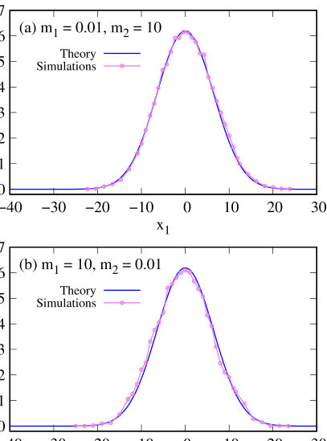
<figcaption class="paper-figure-caption"><b>Fig 2.</b> FIG. 2. The numerically computed marginal probability dis- tribution (P(x1)) in comparison to the distribution obtained from theory (Eq. (5)). The distributions are very close to each other for the two cases. The simulations assume m1 = 0.01, m2 = 10 (a), and m1 = 10, m2 = 0.01 (b), T1 = 99, T2 = 1, γ1 = γ2 = 1, k1 = k2 = 1, and κ = 2.</figcaption>
</figure>
<figure class="paper-figure-card">
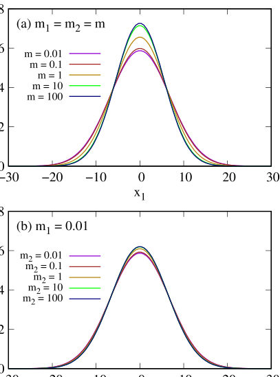
<figcaption class="paper-figure-caption"><b>Fig 3.</b> FIG. 3. The analytical marginal probability distribution (P(x1)) for different values of the mass m of each bead. a) The distributions become narrower and higher with an increase in mass which is equal for each bead. b) The distributions also increases with increase in mass (m2) of the second bead keep- ing the first bead at fixed mass (m1 = 0.01). But the extent of increase is very small. Here, T1 = 99, T2 = 1, γ1 = γ2 = 1, k1 = k2 = 1, and κ = 2.</figcaption>
</figure>
<figure class="paper-figure-card">
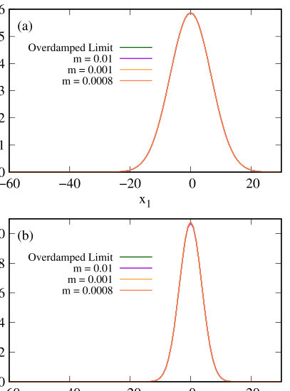
<figcaption class="paper-figure-caption"><b>Fig 4.</b> FIG. 4. The marginal probability distribution for the position (x1) of the bead to the left (a) and position (x2) of the bead to the right (b). The marginal distributions for the overdamped limit are compared with the analytically obtained distribu- tions of different small masses. The distributions from the overdamped limit and the three small masses lie on top of each other. The curves were drawn at T1 = 99, T2 = 1, γ1 = γ2 = 1, k1 = k2 = 1, and κ = 2.</figcaption>
</figure>
<figure class="paper-figure-card">
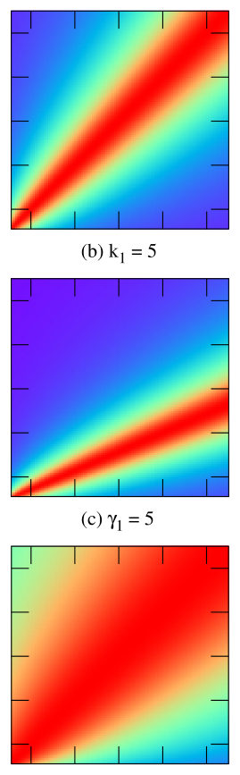
<figcaption class="paper-figure-caption"><b>Fig 5.</b> FIG. 6. Thermal conductivity λ [Eq. (18)] in the (m1, m2) plane. (a) Symmetric setup: γ1 = γ2 = 1, k1 = k2 = 1, κ = 2. (b) k1 = 5, κ = 2, all other parameters equal to 1. (c) γ1 = 5, κ = 2, all other parameters equal to 1.</figcaption>
</figure>
</div>

<p><strong>Summary.</strong> This work analyzes a two-bead model coupled to two baths at different temperatures to study nonequilibrium steady states. It establishes that kinetic temperatures are the fundamental variables governing the system's thermodynamics, unifying energy, heat transport, and entropy production. The findings highlight a crucial distinction between path-dependent energy observables and robust, temperature-governed transport measures.</p>
<p><strong>Why it may be interesting.</strong> The rigorous mathematical framework connecting energy, transport, and entropy via kinetic temperatures provides a powerful, generalizable tool for analyzing non-equilibrium dynamics in complex physical systems, relevant to open quantum systems modeling.</p>
<details>
<summary>Detailed structure</summary>
<p><strong>Main problem.</strong> The paper investigates the characterization of nonequilibrium steady states (NESS) in coupled systems subjected to thermal baths at different temperatures, focusing on the role of inertia.</p>
<p><strong>Main result.</strong> Kinetic temperatures are shown to be the fundamental organizing variables that unify energy, heat transport, and entropy production in the system.</p>
<p><strong>Method.</strong> The analysis employs a covariance-matrix approach combined with numerical simulations of underdamped Langevin dynamics to solve for steady-state properties.</p>
<p><strong>Model / system.</strong> The model is a bead-spring system consisting of two beads with arbitrary masses, coupled by a spring, and interacting independently with two thermal baths at distinct temperatures ($T_1$ and $T_2$).</p>
<p><strong>Key observables.</strong> Steady-state probability distributions, heat transport ($\dot{Q}$), entropy production ($\Delta S_{tot}/	au$), and kinetic temperatures ($T_{kin}$).</p>
<p><strong>Important parameters / regimes.</strong> Bead masses ($m_1, m_2$), spring constant ($\kappa$), and bath temperatures ($T_1, T_2$).</p>
<p><strong>Assumptions / limitations.</strong> The analysis is performed within a linear Langevin framework, and the results are shown to be robust for transport/irreversibility measures even when energy observables show path dependence in singular mass limits.</p>
<p><strong>Figures summary.</strong> Figure 1 schematically shows the two beads coupled to two baths. Figure 2 compares the marginal position distribution derived theoretically versus numerically. Figure 3 shows the analytical marginal position distribution for varying bead masses.</p>
<p><strong>Paper structure.</strong> The paper develops the dynamics using Langevin equations, analyzes the steady-state covariance matrix, derives key thermodynamic quantities like heat flux and entropy production, and culminates in establishing kinetic temperatures as the universal variables governing the system's thermodynamics.</p>
</details>
<details>
<summary>Abstract</summary>
<p>We investigate a nonequilibrium steady-state model consisting of two coupled beads with arbitrary masses in contact with two thermal baths at different temperatures. Using a covariance-matrix approach together with numerical simulations of the underdamped Langevin dynamics, we characterize steady-state probability distributions, heat transport, and entropy production. We show that irreversibility measures such as entropy production and heat current are invariant under an exchange of the bead masses, whereas energy-storage observables depend explicitly on the mass arrangement in a symmetrical set up. This reveals a fundamental distinction: energy observables exhibit path dependence in singular mass limits, while transport and irreversibility remain well defined. We show that kinetic temperatures provide the natural variables governing the thermodynamics of the system: their difference controls transport and entropy production, while their sum determines the mean energy via a model specific generalized equipartition relation. In the infinite-mass limit, only constitutive relations expressed in terms of kinetic temperatures remain meaningful. Thus, energy, transport, and irreversibility are unified through kinetic temperatures as the organizing variables. We also derive an effective temperature that defines an equilibrium-like canonical distribution. Finally, we analyze the notion of ergodicity and show that the time-averaged observables converge significantly faster than the ensemble averages.</p>
</details>
<p><sub><a href="#top">↑ back to top</a></sub></p>

<p><a id="paper-2608.31089"></a></p>
<h3 id="phase-noise-induced-many-body-interference-suppression-in-gaussian-boson-sampling"><a href="http://arxiv.org/abs/2608.31089v1">Phase-noise induced many-body interference suppression in Gaussian Boson Sampling</a></h3>
<p><strong>Authors:</strong> Dario Cilluffo, Matthias Kost, Martin B. Plenio<br>
<strong>Type:</strong> theory · <strong>Category:</strong> quantum information and computing · <strong>PDF:</strong> <a href="https://arxiv.org/pdf/2608.31089v1">https://arxiv.org/pdf/2608.31089v1</a><br>
<strong>Analysis basis:</strong> full PDF text, analyzed in chunks
<strong>Topic relevance:</strong> <code>interference shaping light</code> <strong>3/5</strong> · <code>methods for driven-dissipative</code> <strong>3/5</strong> · <code>analog quantum simulation</code> <strong>2/5</strong> · <code>Full counting statistics</code> <strong>1/5</strong> · <code>Keldysh / 2PI / non-Gaussian methods</code> <strong>1/5</strong> · <code>correlated / nonlocal dissipation</code> <strong>1/5</strong> · <code>driven-dissipative phase transition</code> <strong>1/5</strong> · <code>quantum measurements</code> <strong>1/5</strong></p>
<div class="figure-strip-hint">↔ Scroll figures horizontally</div>
<div class="paper-figures-scroll">
<figure class="paper-figure-card">
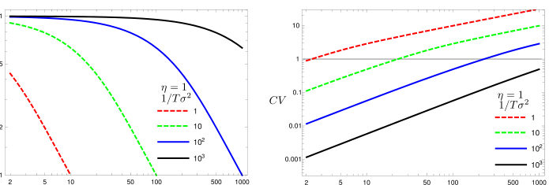
<figcaption class="paper-figure-caption"><b>Fig 1.</b> FIG. 1. Weighting factor wk (left) for lossless setup and coefficient of variation (CV) as functions of the number k for different values of the ratio between the detector integration rate and the phase diffusion rate.</figcaption>
</figure>
</div>

<p><strong>Summary.</strong> This work develops a theoretical framework to quantify how phase noise degrades the quantum interference signatures in Gaussian Boson Sampling. By modeling phase diffusion, the authors show that interference is suppressed, causing the output statistics to approach classical limits. This establishes a crucial diagnostic tool for assessing the impact of realistic noise sources on quantum photonic experiments.</p>
<p><strong>Why it may be interesting.</strong> It provides a concrete, quantitative link between experimentally measurable phase fluctuations (dephasing) and the loss of quantum advantage in photonic quantum computation protocols like GBS.</p>
<details>
<summary>Detailed structure</summary>
<p><strong>Main problem.</strong> The paper investigates how phase noise (phase diffusion) systematically suppresses the many-body quantum interference effects inherent in Gaussian Boson Sampling (GBS).</p>
<p><strong>Main result.</strong> Phase noise selectively suppresses the interference contribution, driving the output statistics toward a classical dimer-model regime, while the incoherent (Hafnian) part remains relatively unaffected.</p>
<p><strong>Method.</strong> The analysis uses a Heisenberg-picture tensor-network formulation to derive Fock-space expressions for output probabilities, followed by modeling the effect of phase fluctuations using an effective dephasing model based on Wiener processes.</p>
<p><strong>Model / system.</strong> The system is Gaussian Boson Sampling (GBS), which uses squeezed-vacuum states. The analysis models the evolution and probability amplitude using tensor networks, focusing on the interference structure derived from perfect matchings.</p>
<p><strong>Key observables.</strong> Output probability $|\langle n|U|G
angle|^2$, interference sectors $I_k(ar{i})$, and the coherence factor $w_k$.</p>
<p><strong>Important parameters / regimes.</strong> Phase fluctuation timescale vs. detection window $T$, photon number $m$, and the mismatch index $k$.</p>
<p><strong>Assumptions / limitations.</strong> The analysis focuses only on phase fluctuations, neglecting amplitude fluctuations, and employs an effective dephasing model based on jointly Gaussian Wiener processes.</p>
<p><strong>Figures summary.</strong> Figure 1 illustrates the coherence factor $w_k$ and its Coefficient of Variation (CV) versus the mismatch index $k$, showing the crossover from coherent to fluctuation-dominated regimes.</p>
<p><strong>Paper structure.</strong> The paper first establishes the Fock-space framework for GBS probabilities, then develops an effective dephasing model using Wiener processes to calculate the suppression factor $w_k$. Finally, it compares GBS to Shot-by-Shot Boson Sampling (SBS) and analyzes the effect of uniform losses.</p>
</details>
<details>
<summary>Abstract</summary>
<p>We develop a Heisenberg-picture tensor-network formulation of collision-free Gaussian Boson Sampling, providing a direct Fock-space expression for output probabilities in terms of experimentally accessible quantities. The resulting representation naturally recovers the Hafnian structure while revealing the decomposition of GBS probability into a phase-insensitive contribution and a hierarchy of interference sectors associated with pairs of perfect matchings. As an application, we investigate phase diffusion and show how it progressively suppresses many-body interference, driving the output statistics toward a classical dimer-model regime. Our results establish a transparent framework for connecting experimentally characterized phase fluctuations with the loss of quantum interference in photonic quantum sampling experiments.</p>
</details>
<p><sub><a href="#top">↑ back to top</a></sub></p>

<p><a id="paper-2608.29557"></a></p>
<h3 id="thresholdless-dynamical-instability-in-transverse-math426math-symmetric-scattering-systems-the-hidden-role-of-bound-states-in-the-continuum"><a href="http://arxiv.org/abs/2608.29557v1">Thresholdless dynamical instability in transverse $\mathcal{PT}$-symmetric scattering systems: The hidden role of bound states in the continuum</a></h3>
<p><strong>Authors:</strong> Chao Zheng<br>
<strong>Type:</strong> theory · <strong>Category:</strong> other · <strong>PDF:</strong> <a href="https://arxiv.org/pdf/2608.29557v1">https://arxiv.org/pdf/2608.29557v1</a><br>
<strong>Analysis basis:</strong> full PDF text, analyzed in chunks
<strong>Topic relevance:</strong> <code>driven-dissipative phase transition</code> <strong>3/5</strong> · <code>methods for driven-dissipative</code> <strong>3/5</strong> · <code>correlated / nonlocal dissipation</code> <strong>2/5</strong> · <code>non-equilibrium universality</code> <strong>2/5</strong> · <code>Keldysh / 2PI / non-Gaussian methods</code> <strong>1/5</strong> · <code>analog quantum simulation</code> <strong>1/5</strong> · <code>quantum measurements</code> <strong>1/5</strong></p>
<div class="figure-strip-hint">↔ Scroll figures horizontally</div>
<div class="paper-figures-scroll">
<figure class="paper-figure-card">
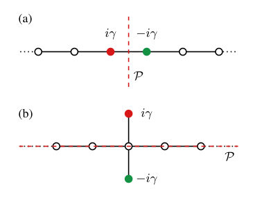
<figcaption class="paper-figure-caption"><b>Fig 1.</b> FIG. 1. Schematic illustration of two classes of PT -symmetric scat- tering systems, distinguished by the orientation of the parity mirror axis P (red dashed line) relative to the transport direction. (a) Lon- gitudinal configuration, where the mirror axis is perpendicular to the transport direction, so that the balanced gain +iγ (red) and loss −iγ (green) are distributed along the propagation axis. (b) Transverse configuration, where the mirror axis coincides with the transport di- rection, so that the balanced gain and loss reside on opposite sides of the propagation channel.</figcaption>
</figure>
<figure class="paper-figure-card">
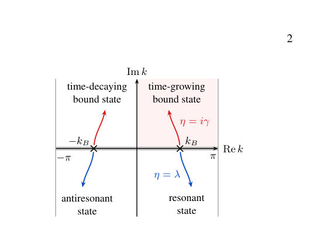
<figcaption class="paper-figure-caption"><b>Fig 2.</b> FIG. 2. Trajectories of the S-matrix poles associated with a BIC in the complex-k plane under mirror-symmetry-breaking perturba- tions. Poles in each quadrant correspond to physically distinct states as labeled. The gray band marks the scattering continuum. The un- perturbed BIC appears as pole-zero coalescences on the real axis at k = ±kB (black crosses). A Hermitian perturbation (blue arrows) shifts the poles into the lower half-plane, producing a resonant and an antiresonant state. A PT -symmetric perturbation (red arrows) drives the poles into the upper half-plane, producing a time-growing and a time-decaying bound state. The time-growing bound state in the first quadrant (shaded)...</figcaption>
</figure>
<figure class="paper-figure-card">
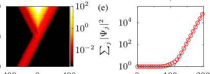
<figcaption class="paper-figure-caption"><b>Fig 3.</b> FIG. 3. Thresholdless instability in the three-site side-coupled model. (a) Schematic of the model with gain +iγ on site a and loss −iγ on site b. (b) Trajectories of the S-matrix poles in the complex k plane as a function of γ, with the color bar showing γ in units of J. Black crosses mark the BIC at k = ±kB. The pole originating from +kB enters the first quadrant (shaded) for any nonzero γ, signaling the emergence of a TGBS. (c) Imaginary part of the TGBS energy as a function of γ on a double-logarithmic scale. Circles are exact pole solutions and the solid line is the perturbative prediction of Eq. (28). (d) Time evolution of the intensity |Ψj(t)|2 of the Gaussian wave packet with k0 =...</figcaption>
</figure>
<figure class="paper-figure-card">
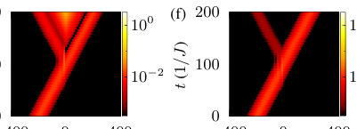
<figcaption class="paper-figure-caption"><b>Fig 4.</b> FIG. 4. Placement-controlled stability in the four-site rhombic model. (a),(b) Schematics of the transverse (Vv) and longitudinal (Vh) placements, respectively. Gain and loss reside on the side sites a, b in (a) and on the chain sites 0, 1 in (b). (c),(d) Trajectories of the S-matrix poles in the complex k plane as a function of γ for the transverse and longitudinal placements, respectively; the color bar indicates γ in units of J. Black crosses mark the BIC at ±kB. In (c), the pole pair originating from the BIC moves into the up- per half-plane for arbitrarily small γ, signaling the emergence of a TGBS, whereas in (d) the BIC remains pinned on the real axis for all γ. (e),(f) Time...</figcaption>
</figure>
</div>

<p><strong>Summary.</strong> This paper reveals a thresholdless dynamical instability in transverse PT-symmetric scattering systems, showing that the presence of a BIC coupled to the continuum leads to exponential energy growth under anti-Hermitian perturbations. The instability is governed by the spatial overlap between the gain/loss potential and the BIC state, providing a crucial design principle for stable non-Hermitian devices.</p>
<p><strong>Why it may be interesting.</strong> This work is highly relevant to AMO physics and open quantum systems as it provides a rigorous stability criterion for engineered non-Hermitian systems, directly impacting the design of stable quantum optical devices.</p>
<details>
<summary>Detailed structure</summary>
<p><strong>Main problem.</strong> The paper investigates the dynamical stability of transverse parity-time (PT)-symmetric scattering systems, addressing the gap in knowledge regarding their dynamic stability despite extensive study of their stationary properties.</p>
<p><strong>Main result.</strong> The authors demonstrate that an anti-Hermitian PT-symmetric perturbation can drive the system into a time-growing bound state (TGBS) for arbitrarily small gain-loss strength, establishing a microscopic instability criterion.</p>
<p><strong>Method.</strong> The analysis relies on tracking the poles of the S-matrix in the complex wave-number plane, using perturbation theory (Feshbach projection) to analyze the shift of Bound States in the Continuum (BICs).</p>
<p><strong>Model / system.</strong> The study uses transverse PT-symmetric scattering systems, modeled via tight-binding approaches, specifically examining three-site side-coupled and four-site rhombic models with engineered gain/loss potentials.</p>
<p><strong>Key observables.</strong> Pole trajectories in the complex k-plane, the imaginary part of the energy ($  ext{Im } E$), and the time evolution of a localized wave packet showing exponential growth.</p>
<p><strong>Important parameters / regimes.</strong> Gain-loss strength ($\gamma$), the golden-rule coupling ($\Gamma_V$), and the nature of the perturbation (Hermitian vs. anti-Hermitian).</p>
<p><strong>Assumptions / limitations.</strong> The analysis often assumes the existence of a single, non-degenerate BIC for simplicity, and the instability mechanism is linked to the spatial overlap between the gain-loss potential and the BIC wave function.</p>
<p><strong>Figures summary.</strong> Figures illustrate the pole coalescence (BIC), the shift of poles under Hermitian perturbation (lower half-plane), and the upward shift into the first quadrant under PT-symmetric perturbation, accompanied by time evolution plots showing exponential growth.</p>
<p><strong>Paper structure.</strong> The paper first establishes the theoretical framework by noting the gap in dynamical stability studies. It then analyzes the effect of perturbations on the BIC pole structure, contrasting Hermitian and anti-Hermitian cases. Finally, it confirms the instability mechanism using specific lattice models (three-site and four-site rhombic) and derives a design principle.</p>
</details>
<details>
<summary>Abstract</summary>
<p>The stationary scattering properties of transverse parity-time ($\mathcal{PT}$) symmetric systems have been extensively studied, yet their dynamical stability, a prerequisite for any stationary description, remains largely unexplored. Here we uncover a thresholdless dynamical instability in such systems, driven by symmetry-protected bound states in the continuum (BICs). Without gain and loss, the up-down mirror symmetry of the transverse geometry generically protects a BIC, which manifests as the coalescence of an $S$-matrix pole and zero on the real axis of the complex wave-number plane. A Hermitian symmetry-breaking perturbation shifts the poles into the lower half-plane, converting the BIC into a resonance with a Fermi-golden-rule decay width. An anti-Hermitian $\mathcal{PT}$-symmetric perturbation instead reverses the sign of the second-order energy shift, driving the poles into the upper half-plane and producing a time-growing bound state with $\operatorname{Im}E=γ^{2}Γ_{V}/2+O(γ^{3})$, where $γ$ is the gain-loss strength and $Γ_{V}$ is the golden-rule coupling of the BIC to the continuum. The instability therefore sets in at arbitrarily small $γ$ whenever $Γ_{V}>0$. We confirm this mechanism in a three-site side-coupled model that is unstable despite possessing a unitary scattering matrix, and in a four-site rhombic model where transverse and longitudinal gain-loss placements yield vanishing and finite thresholds, respectively. These results establish a microscopic stability criterion and a design principle for stable $\mathcal{PT}$-symmetric scattering devices.</p>
</details>
<p><sub><a href="#top">↑ back to top</a></sub></p>

<p><a id="paper-2608.30624"></a></p>
<h3 id="time-delayed-feedback-turns-arrhenius-escape-logarithmic"><a href="http://arxiv.org/abs/2608.30624v1">Time-delayed feedback turns Arrhenius escape logarithmic</a></h3>
<p><strong>Authors:</strong> Roy Podgaetsky, Vishwajeet Kumar Arnab Pal, Ohad Shpielberg<br>
<strong>Type:</strong> theory · <strong>Category:</strong> statistical mechanics · <strong>PDF:</strong> <a href="https://arxiv.org/pdf/2608.30624v1">https://arxiv.org/pdf/2608.30624v1</a><br>
<strong>Analysis basis:</strong> full PDF text, analyzed in chunks
<strong>Topic relevance:</strong> <code>non-equilibrium universality</code> <strong>3/5</strong> · <code>Keldysh / 2PI / non-Gaussian methods</code> <strong>2/5</strong> · <code>methods for driven-dissipative</code> <strong>2/5</strong> · <code>quantum measurements</code> <strong>2/5</strong> · <code>Frenkel-Kontorova</code> <strong>1/5</strong> · <code>correlated / nonlocal dissipation</code> <strong>1/5</strong> · <code>driven-dissipative phase transition</code> <strong>1/5</strong> · <code>scars &amp; prethermalization</code> <strong>1/5</strong></p>
<div class="figure-strip-hint">↔ Scroll figures horizontally</div>
<div class="paper-figures-scroll">
<figure class="paper-figure-card">
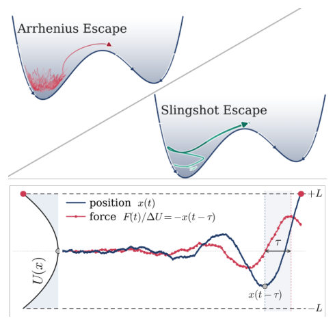
<figcaption class="paper-figure-caption"><b>Fig 1.</b> FIG. 1. The slingshot mechanism. Top: Arrhenius es- cape. Escape via a rare fluctuation (red) over the barrier, giving exponentially long escape times set by ∆U/D. Mid- dle: Slingshot escape. Delayed feedback drives the parti- cle over the barrier deterministically in a few exponentially increasing oscillations (green). Bottom: Slingshot trajec- tory. A typical trajectory of x(t) (navy) with a feedback force F/∆U = −x(t −τ) (red). Dashed vertical lines mark t −τ and t. The delay τ induces a phase shift between x(t) and F(t), driving the particle to the boundary ±L.</figcaption>
</figure>
<figure class="paper-figure-card">
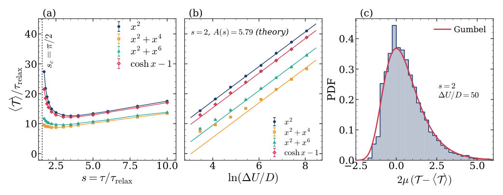
<figcaption class="paper-figure-caption"><b>Fig 2.</b> FIG. 2. Left: Non-monotone speedup. Dimensionless mean escape time versus delay at ∆U/D = 50, for the four potentials. Each falls sharply past sc = π/2 to a minimum near s ≃3 — exponentially faster than Arrhenius, and below the free-diffusion time — then saturates to the diffusive limit in large s. The non-monotonic shape is a generic feature of slingshot escape. Middle: Universality of the logarithmic slope. Dimensionless mean escape time versus ln(∆U/D) at s = 2, for four hardening potentials (harmonic, x2 + x4, x2 + x6, cosh x −1). Lines share the single predicted slope A(s) with one fitted intercept each. Right: Escape-time distribution is Gumbel. Histogram of the rescaled, centered...</figcaption>
</figure>
<figure class="paper-figure-card">
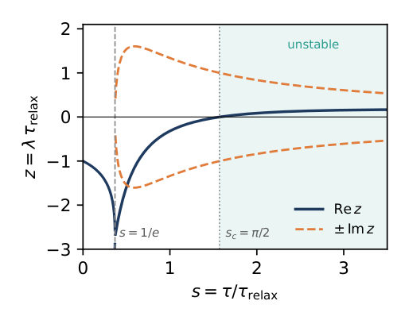
<figcaption class="paper-figure-caption"><b>Fig 3.</b> FIG. 3. Structure of the leading root z = λτrelax of the characteristic equation (2). The root z is complex in nature. For s &lt; 1/e two real roots exist; they coalesce at z = −e and become a complex pair, whose real part (solid) crosses zero at sc = π/2. Beyond that (shaded) the minimum is an unstable focus with growth rate µ and frequency ω (dashed).</figcaption>
</figure>
</div>

<p><strong>Summary.</strong> This theoretical work analyzes how time-delayed feedback fundamentally alters thermal escape dynamics, replacing the standard exponential Arrhenius law with a logarithmic dependence on the barrier height. By inducing a deterministic 'slingshot' instability, the delay acts as a tunable control parameter, enabling escape significantly faster than predicted by classical theories.</p>
<p><strong>Why it may be interesting.</strong> The replacement of exponential scaling with a logarithmic dependence is a profound non-equilibrium effect, providing a new, controllable mechanism for accelerating processes relevant to quantum tunneling or barrier crossing in open quantum systems.</p>
<details>
<summary>Detailed structure</summary>
<p><strong>Main problem.</strong> The paper investigates how time-delayed feedback modifies the standard Arrhenius exponential scaling governing thermally activated escape over an energy barrier.</p>
<p><strong>Main result.</strong> The mean escape time transitions from exponential to a logarithmic dependence on the barrier height, $\langle T 
angle \propto \ln(\Delta U/D)$, due to a deterministic 'slingshot' escape mechanism.</p>
<p><strong>Method.</strong> The analysis involves solving the non-Markovian Langevin equation, identifying a Hopf bifurcation point, and deriving the escape time by analyzing the two-stage process of noise-seeded diffusion followed by deterministic amplification.</p>
<p><strong>Model / system.</strong> The system is an overdamped particle diffusing in a confining potential $U(x)$, subjected to a time-delayed conservative force: $\gamma \dot{x}(t) = -U'(x(t-	au)) + \sqrt{2D} \eta(t)$.</p>
<p><strong>Key observables.</strong> Mean escape time $\langle T 
angle$, which exhibits a Gumbel distribution for its fluctuations.</p>
<p><strong>Important parameters / regimes.</strong> Dimensionless delay $s = 	au/	au_{	ext{relax}}$, barrier-to-noise ratio $\Delta U/D$, and the critical delay $s_c = \pi/2$.</p>
<p><strong>Assumptions / limitations.</strong> The analysis assumes the system is overdamped and the delay only affects the conservative force; the logarithmic law is derived for the weak-noise regime ($\Delta U/D \gg 1$).</p>
<p><strong>Figures summary.</strong> Figures illustrate the contrast between Arrhenius and Slingshot escape trajectories, confirm the universal logarithmic slope $A(s)$ across different potentials, and show the Gumbel distribution of the escape-time histogram.</p>
<p><strong>Paper structure.</strong> The paper establishes the non-Markovian dynamics, identifies the instability threshold ($s_c$), derives the logarithmic escape law $\langle T 
angle \propto \ln(\Delta U/D)$ by analyzing the envelope crossing, and discusses the implications for tunable control of activated processes.</p>
</details>
<details>
<summary>Abstract</summary>
<p>Thermal escape is governed by the Arrhenius law, where the mean escape time scales exponentially with the barrier height. We show that the non-Markovianity induced by time-delayed feedback in the confining force removes this exponential scaling. Beyond a threshold set by the curvature of the minimum, the delay destabilizes the well, and the thermal noise seeds an instability that is subsequently amplified deterministically to the boundary leading to \textit{slingshot} escape trajectories. The escape time becomes logarithmic in the barrier, its fluctuations follow a Gumbel law, and an optimal delay enables escape faster than free diffusion. Our results propose time delay as a tunable and experimentally feasible control parameter for accelerating activated processes.</p>
</details>
<p><sub><a href="#top">↑ back to top</a></sub></p>

<p><a id="paper-2608.30496"></a></p>
<h3 id="cross-spectral-reservoir-correlations-as-a-resource-for-finite-time-quantum-otto-engines"><a href="http://arxiv.org/abs/2608.30496v1">Cross-Spectral Reservoir Correlations as a Resource for Finite-Time Quantum Otto Engines</a></h3>
<p><strong>Authors:</strong> Siddhartha Dutta, Sujay Mondal, Ankush Das, Anumita Mukhopadhyay, Abhijit Bandyopadhyay<br>
<strong>Type:</strong> theory · <strong>Category:</strong> statistical mechanics · <strong>PDF:</strong> <a href="https://arxiv.org/pdf/2608.30496v1">https://arxiv.org/pdf/2608.30496v1</a><br>
<strong>Analysis basis:</strong> full PDF text, analyzed in chunks
<strong>Topic relevance:</strong> <code>Keldysh / 2PI / non-Gaussian methods</code> <strong>3/5</strong> · <code>correlated / nonlocal dissipation</code> <strong>3/5</strong> · <code>driven-dissipative phase transition</code> <strong>2/5</strong> · <code>methods for driven-dissipative</code> <strong>2/5</strong> · <code>non-equilibrium universality</code> <strong>1/5</strong> · <code>quantum measurements</code> <strong>1/5</strong></p>
<div class="figure-strip-hint">↔ Scroll figures horizontally</div>
<div class="paper-figures-scroll">
<figure class="paper-figure-card">
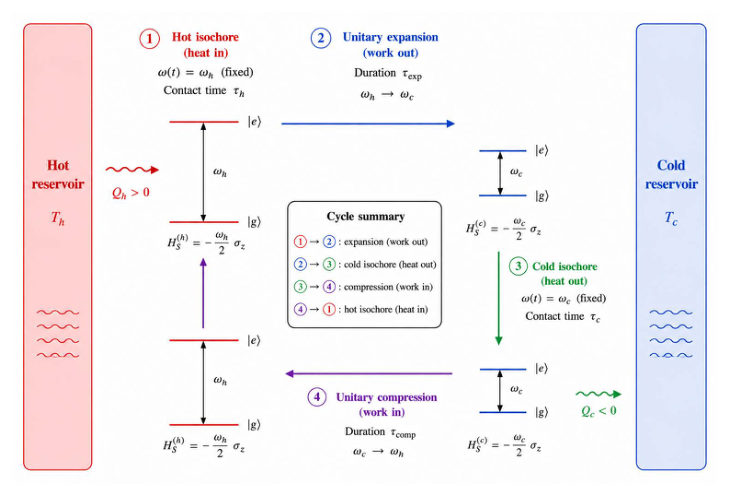
<figcaption class="paper-figure-caption"><b>Fig 1.</b> Figure 1: Illustration of a finite-time quantum Otto cycle:The two-level working medium S exchanges heat with the hot and cold reservoirs during the isochoric strokes, while the energy-level spacing of its bare Hamiltonian HS is held fixed at ωh and ωc, respectively, with ωh &gt; ωc. Here, Qh denotes the heat absorbed from the hot reservoir, whereas Qc denotes the heat released to the cold reservoir. During each isochore, the system–reservoir coupling also induces a Lamb-shift correction H(α) LS (t) to the bare working-medium Hamiltonian. The isolated expansion and compression strokes vary the bare level spacing as ωh →ωc and ωc →ωh, respectively.</figcaption>
</figure>
<figure class="paper-figure-card">
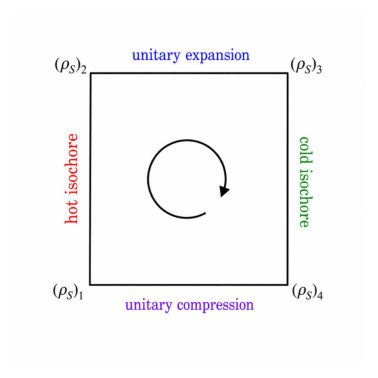
<figcaption class="paper-figure-caption"><b>Fig 2.</b> Figure 2: Schematic representation of the finite-time quantum Otto cycle, with the working- medium states (ρS)1, (ρS)2, (ρS)3, and (ρS)4 defined at the boundaries between successive strokes.</figcaption>
</figure>
<figure class="paper-figure-card">
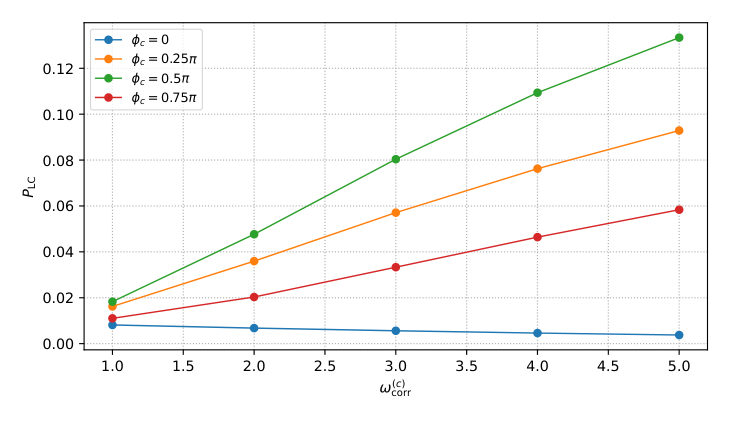
<figcaption class="paper-figure-caption"><b>Fig 3.</b> Figure 3: Power generated in the last cycle as a function of the characteristic cross-correlation frequency ω(c) corr of the cold reservoir for different values of the cross-spectral phase ϕc = 0, π/4, π/2 and 3π/4 with fixed correlation strength rc = 1. Corresponding hot-reservoir parameters are fixed at rh = 1, ω(h) corr = 5, ϕh = π/2. The cycle duration is τcyc = 8 with τh = τc = τexp = τcomp = 2. All remaining are parameters fixed as specified in the text.</figcaption>
</figure>
<figure class="paper-figure-card">
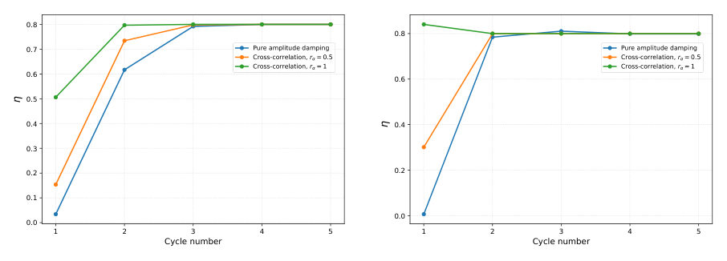
<figcaption class="paper-figure-caption"><b>Fig 4.</b> Figure 4: Cycle-resolved work to heat ratio η for pure-dephasing and pure-amplitude-damping reservoirs, compared with reservoirs possessing longitudinal–transverse cross-spectral corre- lations of strengths rc = rh = 0.5 and 1. The reservoir parameters are βh = 1, βc = 40, ωcorr = 5, and ϕ = π/2, while the two panels correspond to different durations of the four Otto strokes: (a) τcyc = 8 with τh = τc = τexp = τcomp = 2 and (b) τcyc = 20 with τh = τc = τexp = τcomp = 5. All remaining parameters are fixed as specified in the text.</figcaption>
</figure>
<figure class="paper-figure-card">
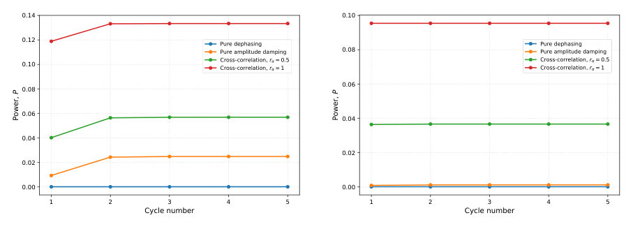
<figcaption class="paper-figure-caption"><b>Fig 5.</b> Figure 5: Cycle-resolved power P for the pure-dephasing and pure-amplitude-damping limits and in the presence of longitudinal–transverse cross-spectral correlations with rα = 0.5 and 1. The reservoir cross-spectral parameters are ω(α) corr = 5, and ϕα = π/2. Panels (a) and (b) correspond, respectively, to cycle durations τcyc = 8 with τh = τc = τexp = τcomp = 2 and 20 with τh = τc = τexp = τcomp = 5. All remaining parameters are fixed as specified in the text.</figcaption>
</figure>
</div>

<p><strong>Summary.</strong> This work explores how engineered cross-correlations in the environment reservoirs can enhance the power output of a quantum Otto engine operating in finite time. By using advanced non-Markovian quantum dynamics techniques, the authors demonstrate that these off-diagonal spectral correlations provide a novel control knob for quantum thermal machines. This establishes a new resource for controlling transient energy conversion processes.</p>
<p><strong>Why it may be interesting.</strong> It provides a concrete, controllable mechanism (off-diagonal reservoir spectra) to engineer quantum thermal machines beyond simple temperature or coupling strength variations, which is highly relevant for open quantum systems theory.</p>
<details>
<summary>Detailed structure</summary>
<p><strong>Main problem.</strong> The paper investigates how longitudinal-transverse cross-spectral reservoir correlations affect the thermodynamic performance of a quantum Otto engine operating in finite time.</p>
<p><strong>Main result.</strong> Cross-spectral correlations act as an additional resource, capable of enhancing the output power of the engine, although they do not alter the limit-cycle efficiency.</p>
<p><strong>Method.</strong> The dynamics are derived using the second-order time-convolutionless (TCL2) framework, which retains non-Markovian, finite-time reservoir memory effects.</p>
<p><strong>Model / system.</strong> The system is a two-level working medium coupled to two bosonic reservoirs (hot and cold) forming a quantum Otto engine. The coupling channels are characterized by a spectral-density matrix including cross-correlation terms.</p>
<p><strong>Key observables.</strong> Output power, cycle work, population imbalance ($\langle\sigma_z
angle$), and efficiency ($\eta$).</p>
<p><strong>Important parameters / regimes.</strong> Cross-spectral correlation strength, cross-spectral phase, characteristic frequency scale, and cycle duration ($    au_{cyc}$).</p>
<p><strong>Assumptions / limitations.</strong> The analysis avoids the Markov limit to capture finite reservoir memory effects, and the limit-cycle efficiency is fixed at the classical Otto value for the considered unitary strokes.</p>
<p><strong>Figures summary.</strong> Figures illustrate the finite-time quantum Otto cycle sequence and show the time evolution of the population imbalance ($\langle\sigma_z
angle$) over successive cycles, demonstrating sensitivity to cross-correlation strength.</p>
<p><strong>Paper structure.</strong> The paper establishes the theoretical framework by analyzing the reservoir coupling via spectral density matrices, derives the non-Markovian dynamics using TCL2, and then applies this to the Otto cycle to quantify the enhancement of power via cross-correlations.</p>
</details>
<details>
<summary>Abstract</summary>
<p>We investigate the thermodynamic consequences of longitudinal-transverse cross-spectral reservoir correlations in a finite-time quantum Otto engine with a two-level working medium. Each reservoir couples through excitation-relaxation and dephasing channels whose fluctuations are characterized by a Hermitian positive-semidefinite spectral-density matrix, with the off-diagonal elements encoding their cross correlations. The finite-time isochoric dynamics is derived within the second-order time-convolutionless framework, without imposing the Markov limit at the outset, so that finite reservoir-memory effects can enter through time-dependent dissipative and reservoir-induced coherent contributions. The resulting dynamics is then recast in Bloch-vector form to construct the stroke-resolved cycle dynamics. At fixed auto-spectral densities, cross-spectral correlations modify the populations and coherences of the working medium and thereby its thermodynamic performance. Increasing the correlation strength can enhance the output power, with the enhancement controlled by the cross-spectral phase and characteristic frequency scale. The correlations also reshape the transient cycle-to-cycle evolution and the approach to periodic operation, while the limit-cycle efficiency remains fixed at the Otto value for the population-preserving unitary strokes considered here. These results establish off-diagonal reservoir spectra as an additional resource for controlling finite-time quantum thermal machines.</p>
</details>
<p><sub><a href="#top">↑ back to top</a></sub></p>

<p><a id="paper-2608.31080"></a></p>
<h3 id="boundary-quantum-knizhnik-zamolodchikov-equations-and-integrability-of-quantum-field-theories-with-time-dependent-bulk-and-boundary-coupling-strengths"><a href="http://arxiv.org/abs/2608.31080v1">Boundary Quantum Knizhnik-Zamolodchikov Equations and Integrability of Quantum Field Theories with Time-Dependent Bulk and Boundary Coupling Strengths</a></h3>
<p><strong>Authors:</strong> Parameshwar R. Pasnoori<br>
<strong>Type:</strong> theory · <strong>Category:</strong> strongly correlated electrons · <strong>PDF:</strong> <a href="https://arxiv.org/pdf/2608.31080v1">https://arxiv.org/pdf/2608.31080v1</a><br>
<strong>Analysis basis:</strong> full PDF text, analyzed in chunks
<strong>Topic relevance:</strong> <code>analog quantum simulation</code> <strong>3/5</strong> · <code>Keldysh / 2PI / non-Gaussian methods</code> <strong>2/5</strong> · <code>methods for driven-dissipative</code> <strong>2/5</strong> · <code>correlated / nonlocal dissipation</code> <strong>1/5</strong> · <code>driven-dissipative phase transition</code> <strong>1/5</strong> · <code>non-equilibrium universality</code> <strong>1/5</strong> · <code>quantum measurements</code> <strong>1/5</strong></p>
<div class="figure-strip-hint">↔ Scroll figures horizontally</div>
<div class="paper-figures-scroll">
<figure class="paper-figure-card">
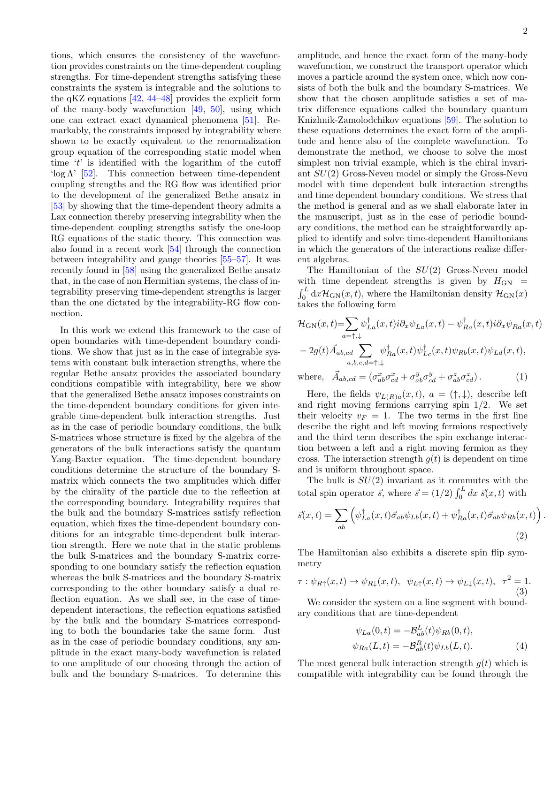
<figcaption class="paper-figure-caption"><b>Fig 1.</b> Low-resolution page preview, page 2</figcaption>
</figure>
<figure class="paper-figure-card">
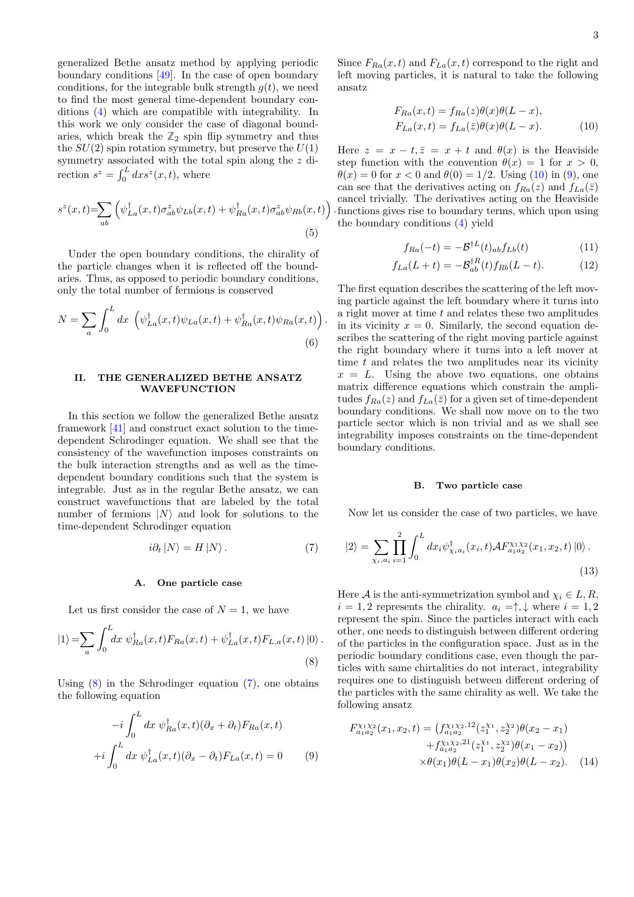
<figcaption class="paper-figure-caption"><b>Fig 2.</b> Low-resolution page preview, page 3</figcaption>
</figure>
<figure class="paper-figure-card">
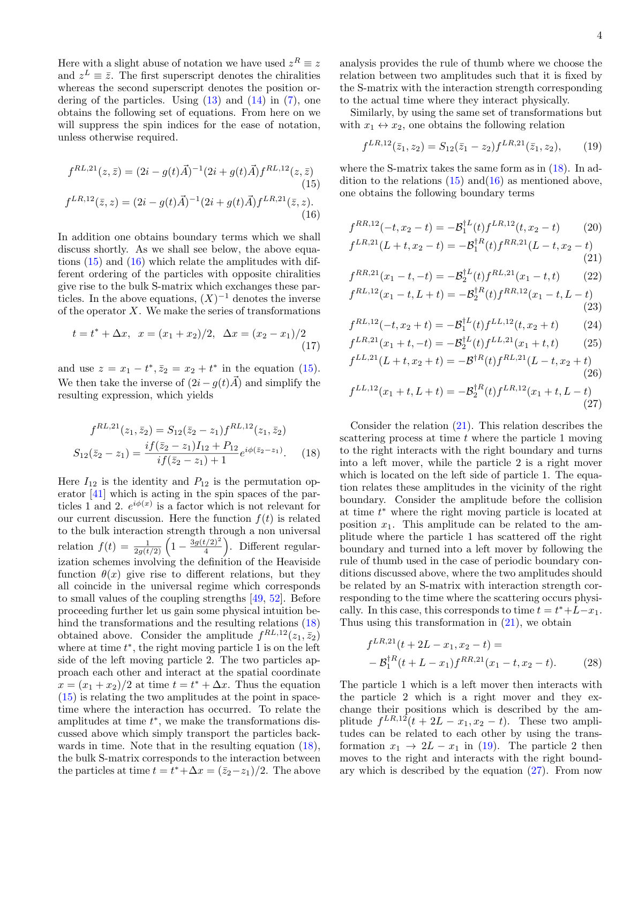
<figcaption class="paper-figure-caption"><b>Fig 3.</b> Low-resolution page preview, page 4</figcaption>
</figure>
<figure class="paper-figure-card">
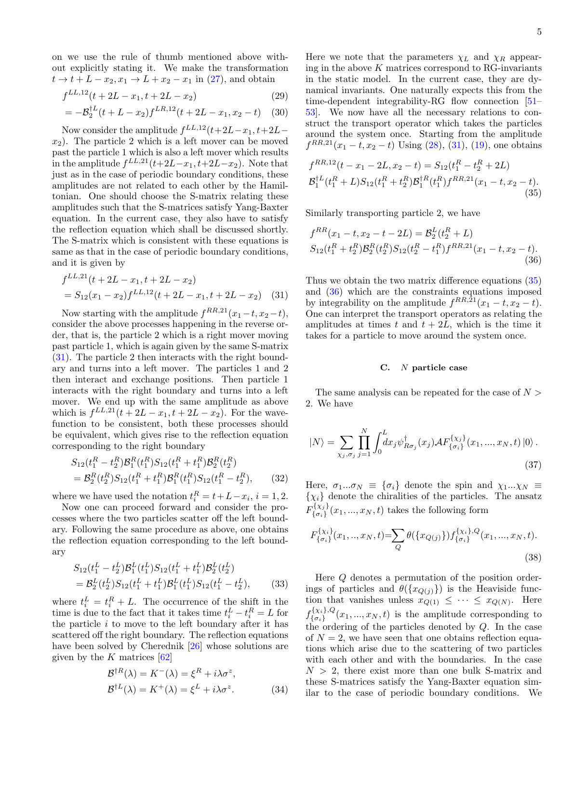
<figcaption class="paper-figure-caption"><b>Fig 4.</b> Low-resolution page preview, page 5</figcaption>
</figure>
<figure class="paper-figure-card">
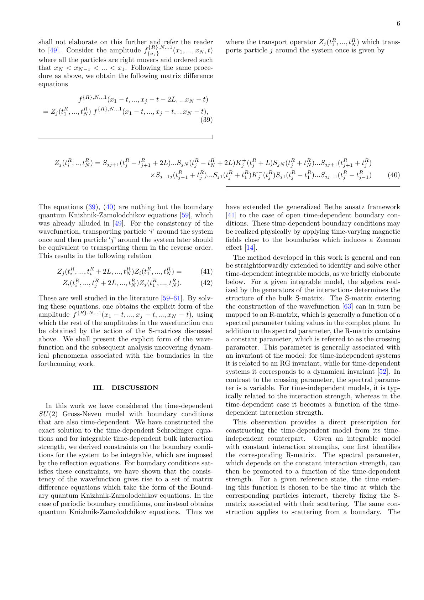
<figcaption class="paper-figure-caption"><b>Fig 5.</b> Low-resolution page preview, page 6</figcaption>
</figure>
</div>

<p><strong>Summary.</strong> This work develops an extension of the generalized Bethe ansatz to handle quantum field theories with time-dependent interactions at both the bulk and the boundaries. By enforcing integrability, the system's dynamics are constrained to satisfy boundary quantum Knizhnik-Zamolodchikov (BqKZ) equations. This provides an exact, powerful method for determining the time-dependent wavefunction in complex, open quantum systems.</p>
<p><strong>Why it may be interesting.</strong> The connection between integrable quantum field theories, time-dependent boundary conditions, and the resulting matrix difference equations (BqKZ) provides powerful, exact tools for analyzing open quantum systems dynamics, which is highly relevant to modern AMO and open quantum system research.</p>
<details>
<summary>Detailed structure</summary>
<p><strong>Main problem.</strong> The paper extends the generalized Bethe ansatz framework to find exact solutions for quantum field theories with both time-dependent bulk and explicitly time-dependent boundary coupling strengths while maintaining integrability.</p>
<p><strong>Main result.</strong> The consistency of the wavefunction requires the system to satisfy boundary quantum Knizhnik-Zamolodchikov (BqKZ) equations, which govern the exact time-dependent wavefunction.</p>
<p><strong>Method.</strong> The authors employ the generalized Bethe ansatz, requiring the bulk and boundary S-matrices to satisfy the reflection equation to ensure integrability.</p>
<p><strong>Model / system.</strong> The analysis focuses on the SU(2) Gross-Neveu model, described by a time-dependent Schrödinger equation for fermions confined between boundaries (open boundary conditions).</p>
<p><strong>Key observables.</strong> The exact many-body wavefunction, the conserved total number of fermions (N), and the dynamical invariants ($\chi_L, \chi_R$).</p>
<p><strong>Important parameters / regimes.</strong> Time-dependent coupling strengths $g(t)$ and boundary coupling functions $B(t)$.</p>
<p><strong>Assumptions / limitations.</strong> The analysis is restricted to the case of diagonal boundaries, which breaks $Z_2$ spin flip and $SU(2)$ spin rotation symmetry but preserves $U(1)$ symmetry.</p>
<p><strong>Paper structure.</strong> The structure progresses from establishing the generalized Bethe ansatz for time-dependent bulk interactions to incorporating time-dependent boundary conditions. This leads to deriving the necessary reflection equations (for the boundaries) and subsequently constructing the matrix difference equations known as the BqKZ equations.</p>
</details>
<details>
<summary>Abstract</summary>
<p>The generalized Bethe ansatz framework formulated in [P. R. Pasnoori, Phys. Rev. B 112, L060409 (2025)] provides a unified framework to find exact solutions to quantum many-body systems with time-dependent coupling strengths with periodic boundary conditions. In this work we extend this framework to the case of open boundary conditions where in addition to the time-dependent interactions in the bulk, the boundary conditions are explicitly time-dependent. We show that for integrable time-dependent bulk coupling strengths, the generalized Bethe ansatz framework provides the time-dependent boundary conditions compatible with integrability and reduces the time-dependent Schrodinger equation to a set of matrix difference equations called the boundary quantum Knizhnik-Zamolodchikov (BqKZ) equations. The solution to the BqKZ equations provides the explicit form of the exact wavefunction. We further show that the RG invariants of the corresponding static model identify with the dynamical invariants in the time-dependent model.</p>
</details>
<p><sub><a href="#top">↑ back to top</a></sub></p>

<p><a id="paper-2608.31064"></a></p>
<h3 id="entanglement-and-magic-transitions-in-an-all-to-all-non-hermitian-spin-model"><a href="http://arxiv.org/abs/2608.31064v1">Entanglement and magic transitions in an all-to-all non-Hermitian spin model</a></h3>
<p><strong>Authors:</strong> Sasanka Dowarah, Michael Kolodrubetz<br>
<strong>Type:</strong> theory · <strong>Category:</strong> statistical mechanics · <strong>PDF:</strong> <a href="https://arxiv.org/pdf/2608.31064v1">https://arxiv.org/pdf/2608.31064v1</a><br>
<strong>Analysis basis:</strong> full PDF text, analyzed in chunks
<strong>Topic relevance:</strong> <code>driven-dissipative phase transition</code> <strong>3/5</strong> · <code>non-equilibrium universality</code> <strong>3/5</strong> · <code>Keldysh / 2PI / non-Gaussian methods</code> <strong>1/5</strong> · <code>analog quantum simulation</code> <strong>1/5</strong> · <code>correlated / nonlocal dissipation</code> <strong>1/5</strong> · <code>methods for driven-dissipative</code> <strong>1/5</strong> · <code>quantum measurements</code> <strong>1/5</strong></p>
<div class="figure-strip-hint">↔ Scroll figures horizontally</div>
<div class="paper-figures-scroll">
<figure class="paper-figure-card">
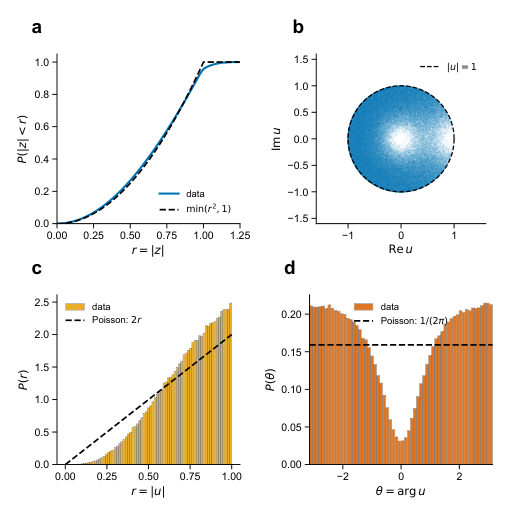
<figcaption class="paper-figure-caption"><b>Fig 1.</b> FIG. 3. Numerical verification of Ginibre universality of the completely disordered part G(µR = µI = 0, σR = σI = 1) for L = 12, kR = kI = 3, averaged over 128 random disorder real- izations. (a) Cumulative radial distribution P(|z| &lt; r) of the eigenvalues, compared with the flat-disk prediction min(r2, 1) from Girko’s circular law. (b) Complex spacing ratios un [Eq. (48)] in the complex plane. (c) Radial density P(r), r = |u|, compared with the Poisson prediction PPoi(r) = 2r. (d) Angular distribution P(θ), θ = arg u, compared with the uniform Poisson value 1/(2π).</figcaption>
</figure>
<figure class="paper-figure-card">
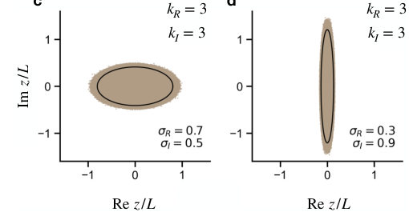
<figcaption class="paper-figure-caption"><b>Fig 2.</b> FIG. 2. Validity of the elliptic-law description of the spec- tral bulk as a function of locality k for L = 12. (a),(b) kR = kI = 5, averaged over 64 disorder realizations; (c),(d) kR = kI = 3, averaged over 128 disorder realizations. The left column corresponds to σR = 0.7 and σI = 0.5 (τ ≃0.32), while the right column corresponds to σR = 0.3 and σI = 0.9 (τ = −0.8). The black solid curves denote the elliptic-law boundary predicted by Eq. (46), with the eigenvalues rescaled by L. For kR = kI = 5 [panels (a),(b)], the numerical spec- tral support is well described by the predicted ellipse, with only approximately 0.4% and 0.95% of the eigenvalues lying outside the predicted boundary,...</figcaption>
</figure>
<figure class="paper-figure-card">
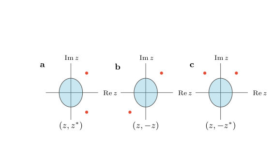
<figcaption class="paper-figure-caption"><b>Fig 3.</b> FIG. 4. Schematic illustration of the three possible symmetry- related configurations of a pair of isolated outlier eigenvalues in the complex spectrum: (a) (z, z∗), (b) (z, −z), and (c) (z, −z∗). The shaded region denotes the bulk spectral sup- port, while the red points indicate the isolated outlier eigen- values.</figcaption>
</figure>
<figure class="paper-figure-card">
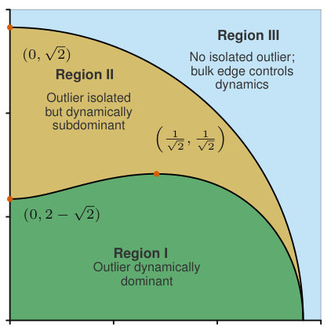
<figcaption class="paper-figure-caption"><b>Fig 4.</b> FIG. 5. Phase diagram in the (σR, σI) plane showing the dis- tinction between outlier existence and dynamical dominance. The outer circular boundary, σ2 R + σ2 I = 2, marks the disap- pearance of the isolated outlier. The inner curve marks the dynamical-dominance transition, where the upper edge of the bulk overtakes the outlier in imaginary part. Region I has an isolated outlier that is also dynamically dominant. Region II has an isolated outlier that is dynamically subdominant. Re- gion III has no isolated outlier. The marked points indicate the pure anti-Hermitian dominance transition (0, 2− √</figcaption>
</figure>
<figure class="paper-figure-card">
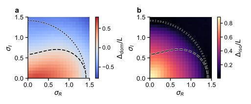
<figcaption class="paper-figure-caption"><b>Fig 5.</b> FIG. 6. Numerical diagnostics of the outlier-to-bulk transi- tion for L = 10, kR = kI = 5, µR = µI = 1 and averaged over 30 disorder realizations per point. (a) Dominance gap ∆dom/L. (b) Isolation gap ∆iso/L. The dashed curve is the analytic dominance boundary and the dotted curve is the an- alytic existence boundary from Eq. (54).</figcaption>
</figure>
</div>

<p><strong>Summary.</strong> This work analyzes a non-Hermitian spin model to understand how its long-time dynamics are dictated by the eigenvalue with the largest imaginary part. The authors find that disorder can induce a sharp transition where the system's state switches from a simple, low-entanglement outlier to a complex, high-entanglement bulk state. This connects spectral theory to quantum resource diagnostics.</p>
<p><strong>Why it may be interesting.</strong> It provides a concrete, analytically solvable model to study non-Hermitian dynamics, linking spectral transitions (outlier vs. bulk) directly to changes in quantum information measures like entanglement and magic.</p>
<details>
<summary>Detailed structure</summary>
<p><strong>Main problem.</strong> The paper investigates the long-time state selection in non-Hermitian many-body systems, which is governed by the eigenvalue with the largest imaginary part.</p>
<p><strong>Main result.</strong> For certain types of disorder (anti-Hermitian and mixed), the dominant eigenstate undergoes a sharp transition from a low-entanglement outlier state to a high-entanglement bulk state when the bulk spectral edge overtakes the outlier.</p>
<p><strong>Method.</strong> The authors construct an analytically tractable non-Hermitian spin ensemble and analyze the spectral properties by comparing the dominant eigenvalue to the spectral bulk edge.</p>
<p><strong>Model / system.</strong> The system is an all-to-all non-Hermitian spin ensemble of L spins with k-local interactions, defined by a Hamiltonian decomposed into Hermitian and anti-Hermitian parts.</p>
<p><strong>Key observables.</strong> Entanglement Entropy, Magic (Nonstabilizerness), and the imaginary part of the dominant eigenvalue.</p>
<p><strong>Important parameters / regimes.</strong> Disorder strength ($\sigma_R, \sigma_I$), locality ($k$), and the ratio of $k$ to $\sqrt{L}$ (determining crossover vs. sharp transition).</p>
<p><strong>Assumptions / limitations.</strong> The long-time state is determined solely by the eigenvalue possessing the largest imaginary part.</p>
<p><strong>Figures summary.</strong> Figures illustrate the spectral landscape, distinguishing between spectral outliers and the spectral bulk, and showing the relative positions of the dominant eigenvalue in different disorder regimes.</p>
<p><strong>Paper structure.</strong> The paper proceeds by defining the model and diagnostics, analyzing the deterministic limit, establishing the dominance criterion based on the largest imaginary part, analyzing the three disorder cases, and finally mapping the non-Hermitian evolution to measurement-induced quantum trajectories.</p>
</details>
<details>
<summary>Abstract</summary>
<p>The long-time state of a non-Hermitian system is determined by the eigenvalue with the largest imaginary part. In interacting many-body systems this eigenvalue usually cannot be tracked analytically, and the character of the state it selects is unknown. We construct a non-Hermitian spin ensemble of $L$ spins with exactly $k$-local all-to-all interactions, in which this dominant eigenvalue can be tracked analytically from the clean limit into the disordered regime. Disorder produces a competition between an isolated spectral outlier and the edge of a many-body spectral bulk. We study three cases: purely anti-Hermitian disorder, purely Hermitian disorder, and mixed disorder of equal strength. For purely anti-Hermitian and mixed disorder, we show that when the bulk overtakes the outlier in imaginary part, the dominant eigenstate switches from an outlier state with low entanglement and magic (nonstabilizerness) to a bulk state with substantially larger entanglement and magic, with both changing at the same threshold. For $k \gg \sqrt{L}$ the bulk has a sharp spectral edge and the transition thresholds follow in closed form, while for $k \ll \sqrt{L}$ spectral tails broaden the transition into a crossover. Purely Hermitian disorder provides a contrasting case with no outlier-to-bulk switching. Finally, we map the non-Hermitian evolution exactly onto postselected trajectories of a monitored quantum system, connecting this spectral mechanism to measurement-induced transitions.</p>
</details>
<p><sub><a href="#top">↑ back to top</a></sub></p>

<p><a id="paper-2608.29957"></a></p>
<h3 id="equilibrium-fluctuations-of-the-weakly-asymmetric-inclusion-process"><a href="http://arxiv.org/abs/2608.29957v1">Equilibrium fluctuations of the weakly asymmetric inclusion process</a></h3>
<p><strong>Authors:</strong> Simon Gabriel<br>
<strong>Type:</strong> theory · <strong>Category:</strong> statistical mechanics · <strong>PDF:</strong> <a href="https://arxiv.org/pdf/2608.29957v1">https://arxiv.org/pdf/2608.29957v1</a><br>
<strong>Analysis basis:</strong> full PDF text, analyzed in chunks
<strong>Topic relevance:</strong> <code>non-equilibrium universality</code> <strong>3/5</strong> · <code>Keldysh / 2PI / non-Gaussian methods</code> <strong>2/5</strong> · <code>methods for driven-dissipative</code> <strong>2/5</strong> · <code>Frenkel-Kontorova</code> <strong>1/5</strong> · <code>analog quantum simulation</code> <strong>1/5</strong> · <code>correlated / nonlocal dissipation</code> <strong>1/5</strong> · <code>driven-dissipative phase transition</code> <strong>1/5</strong></p>
<div class="figure-strip-hint">↔ Scroll figures horizontally</div>
<div class="paper-figures-scroll">
<figure class="paper-figure-card">
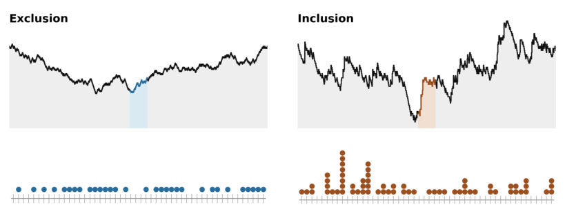
<figcaption class="paper-figure-caption"><b>Fig 1.</b> Figure 1: Plot of stationary fluctuation profiles x 7→Px y=1(ηy −ρ) with x ⩽750 and density ρex = 1</figcaption>
</figure>
</div>

<p><strong>Summary.</strong> This paper rigorously analyzes the large-scale fluctuations of a weakly asymmetric interacting particle system known as the inclusion process. It proves that the system's density fluctuations converge to the solution of the stochastic Burgers equation in a specific non-equilibrium limit. The work utilizes advanced stochastic methods, providing deep insights into the non-equilibrium statistical mechanics of interacting matter.</p>
<p><strong>Why it may be interesting.</strong> While focused on classical statistical mechanics, the techniques used—analyzing non-equilibrium fluctuations and deriving limiting PDEs like the Burgers equation—are foundational to understanding dynamics in many-body quantum systems, especially those exhibiting dissipation or non-linear coupling.</p>
<details>
<summary>Detailed structure</summary>
<p><strong>Main problem.</strong> The paper investigates the equilibrium fluctuations of the one-dimensional weakly asymmetric simple inclusion process, aiming to understand its large-scale limiting behavior.</p>
<p><strong>Main result.</strong> The stationary density fluctuation field converges to the energy solution of the stochastic Burgers equation in the fixed-asymmetry regime, and Gaussian Ornstein-Uhlenbeck fluctuations are found for the symmetric case in a weakly condensing regime.</p>
<p><strong>Method.</strong> The analysis employs advanced stochastic calculus techniques, including martingale formulations, quadratic variation calculations, and the application of a current-specific second-order Boltzmann-Gibbs principle.</p>
<p><strong>Model / system.</strong> The system is the one-dimensional weakly asymmetric simple inclusion process, an interacting particle system on the lattice $\mathbb{Z}$ characterized by nearest-neighbor jump rates and an attractive interaction term.</p>
<p><strong>Key observables.</strong> The stationary density fluctuation field, $\sqrt{L}(\eta_x(t) - 
ho)$, and the variance-normalized field $v_L(t, \varphi)$ are the primary observables.</p>
<p><strong>Important parameters / regimes.</strong> Key regimes include the fixed-$\alpha$ weakly asymmetric regime and the weakly condensing regime ($\alpha_L 	o 0$ such that $\alpha_L L 	o \infty$).</p>
<p><strong>Assumptions / limitations.</strong> The analysis relies on approximating the infinite-volume process with finite-dimensional periodic approximations and assumes the process falls outside standard exclusion process frameworks due to its bosonic stimulation mechanism.</p>
<p><strong>Figures summary.</strong> Figure 1 illustrates stationary fluctuation profiles for both the exclusion process and the inclusion process.</p>
<p><strong>Paper structure.</strong> The paper builds the analysis by first establishing martingale properties and bounds (using forward/backward processes), then deriving the limiting behavior of the density fluctuation field in the weakly asymmetric regime (Theorem 1.1), and finally analyzing the symmetric case in the weakly condensing regime (Theorem 1.2).</p>
</details>
<details>
<summary>Abstract</summary>
<p>We prove that the stationary density fluctuation field of the one-dimensional weakly asymmetric simple inclusion process converges to the energy solution of the stochastic Burgers equation. The key technical ingredient is a second-order Boltzmann-Gibbs principle tailored to the microscopic current. As a consequence, we also obtain Ornstein-Uhlenbeck fluctuations for the symmetric inclusion process in a weakly condensing regime, a result of independent interest.</p>
</details>
<p><sub><a href="#top">↑ back to top</a></sub></p>

<p><a id="paper-2608.30834"></a></p>
<h3 id="metrological-quantum-to-classical-crossover-in-the-volume-of-a-noisy-quasiperiodic-lattice"><a href="http://arxiv.org/abs/2608.30834v1">Metrological quantum-to-classical crossover in the volume of a noisy quasiperiodic lattice</a></h3>
<p><strong>Authors:</strong> Priya Ghosh, Debarupa Saha, Ujjwal Sen, Debraj Rakshit<br>
<strong>Type:</strong> theory · <strong>Category:</strong> disordered systems and neural networks · <strong>PDF:</strong> <a href="https://arxiv.org/pdf/2608.30834v1">https://arxiv.org/pdf/2608.30834v1</a><br>
<strong>Analysis basis:</strong> full PDF text, analyzed in chunks
<strong>Topic relevance:</strong> <code>analog quantum simulation</code> <strong>3/5</strong> · <code>correlated / nonlocal dissipation</code> <strong>2/5</strong> · <code>driven-dissipative phase transition</code> <strong>2/5</strong> · <code>Keldysh / 2PI / non-Gaussian methods</code> <strong>1/5</strong> · <code>methods for driven-dissipative</code> <strong>1/5</strong> · <code>non-equilibrium universality</code> <strong>1/5</strong> · <code>quantum measurements</code> <strong>1/5</strong></p>
<div class="figure-strip-hint">↔ Scroll figures horizontally</div>
<div class="paper-figures-scroll">
<figure class="paper-figure-card">
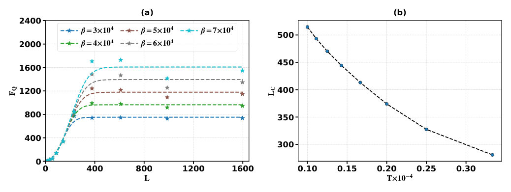
<figcaption class="paper-figure-caption"><b>Fig 1.</b> FIG. 1. Thermal noise-induced MQCC. (a) shows QFI, FQ, for the the on-site potential strength, V , corresponding to the thermal state (vertical axis) as a function of the system size, L (horizontal axis). For every β, the plot depicts the existence of a characteristic length LC(β), below which the QFI scales as L2, and above which QFI nearly saturates, indicating the loss of quantum advantage. The plot thus establishes the system’s departure from an quantum enhanced regime to entrance into an operationally classical regime through the MQCC with increasing system size. All the axes are dimensionless. (b) depicts the variation of LC with the temperature, T. As the temperature decreases, LC(β)...</figcaption>
</figure>
<figure class="paper-figure-card">
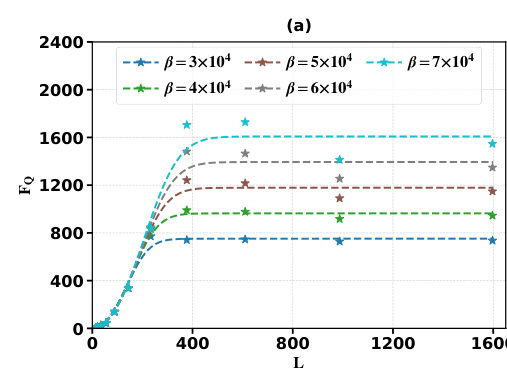
<figcaption class="paper-figure-caption"><b>Fig 2.</b> Figure 1(b) shows the variation of LC(β) with temperature T. As β = 1/T increases, corresponding to a decrease in tem- perature, LC(β) shifts towards larger system sizes. Thus, the characteristic length scale increases with increasing β, indi- cating that the quantum-enhanced regime persists over a larger range of system sizes at lower temperatures. Note that this entire analysis was done at Vc = 2. To probe whether this behavior persists close to Vc, we extend our anal-</figcaption>
</figure>
<figure class="paper-figure-card">
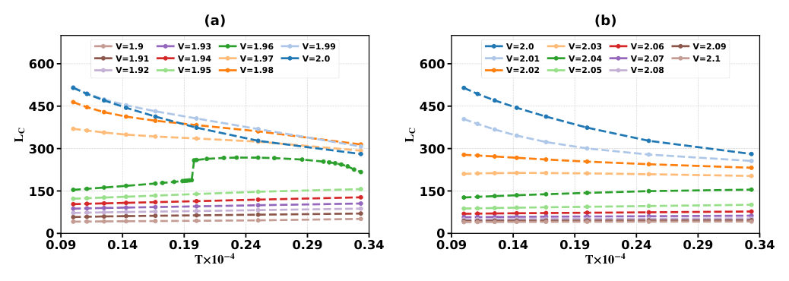
<figcaption class="paper-figure-caption"><b>Fig 3.</b> FIG. 2. We plot LC as a function of temperature, T, for varied values of V when (a) δ &lt; 0 and when (b) when δ &gt; 0. Note that the trend of LC decreasing with increasing T, obtained at VC = 2, starts to fade away as δ increases. At sufficiently flat δ, the trend becomes nearly flat. The vertical axis is dimensionless, whereas the horizontal axis is in units of J/kB.</figcaption>
</figure>
<figure class="paper-figure-card">
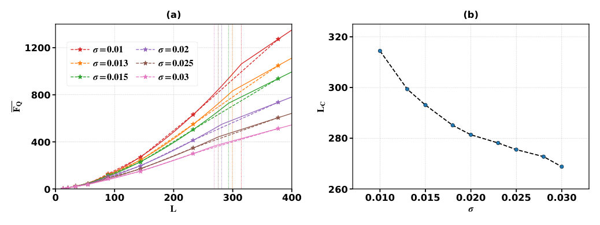
<figcaption class="paper-figure-caption"><b>Fig 4.</b> FIG. 3. Lattice-defect-induced QMCC. (a) depicts quenched averaged ground-state QFI, FQ, corresponding to the ground state of the AAH model in the estimation of the on-site potential strength of the AAH model (vertical axis) with system size (horizontal axis) for different choices of σ. The plot demonstrates σ-induced MQCC in the volume of the system. All the axes are dimensionless. (b) illustrates the crossover point, (LC), with respect to the standard deviation of the Gaussian distribution, σ. As expected, the crossover point shifts towards high system size as the standard deviation of the Gaussian distribution decreases. All the axes are dimensionless.</figcaption>
</figure>
<figure class="paper-figure-card">
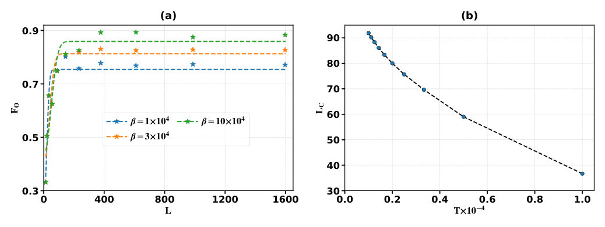
<figcaption class="paper-figure-caption"><b>Fig 5.</b> FIG. 4. Thermal-noise-induced MQCC reflected by OFI. (a) We plot the OFI, for the thermal state of the AAH model in the estimation of the on-site potential strength V , as a function of the system size. Similar to the QFI, the OFI exhibits a thermal-noise-induced MQCC: the OFI initially displays quantum-enhanced scaling and subsequently saturates beyond a characteristic system size. All the axes are dimensionless. (b) The corresponding crossover system size (LC) is plotted as a function of temperature. Consistent with the QFI analysis, the crossover shifts towards larger system sizes as the temperature decreases. This behavior indicates that weaker thermal fluctuations allow the system to...</figcaption>
</figure>
</div>

<p><strong>Summary.</strong> This theoretical work investigates how noise limits the achievable precision in quantum sensing using the AAH model. It identifies a 'metrological quantum-to-classical crossover' where quantum enhancement vanishes beyond a size determined by the noise strength. The findings show that increasing the probe size too much, regardless of the specific noise source, destroys the quantum advantage.</p>
<p><strong>Why it may be interesting.</strong> This work provides a quantitative understanding of how environmental noise fundamentally limits the scalability of quantum sensing protocols in quasiperiodic systems, a crucial concept for designing practical quantum sensors.</p>
<details>
<summary>Detailed structure</summary>
<p><strong>Main problem.</strong> The paper scrutinizes the metrological performance of quantum many-body critical sensors by investigating the 'metrological quantum-to-classical crossover' (MQCC) driven by noise and system size.</p>
<p><strong>Main result.</strong> Distinct noise mechanisms (thermal noise or lattice defects) impose a common limitation: the quantum advantage in sensing is destroyed when the probe size exceeds a finite, noise-dependent characteristic length scale.</p>
<p><strong>Method.</strong> The analysis involves calculating the Quantum Fisher Information (QFI) and comparing its scaling behavior ($L^2$ vs $L^0$) under different noise models.</p>
<p><strong>Model / system.</strong> The study uses the Aubry-André-Harper (AAH) model, which supports a localization-delocalization transition at a finite on-site potential strength. The system is analyzed in the presence of thermal noise or disorder in hopping strengths.</p>
<p><strong>Key observables.</strong> Quantum Fisher Information (QFI), Optimal Fisher Information (OFI), and average nearest-neighbor bipartite entanglement ($E$).</p>
<p><strong>Important parameters / regimes.</strong> System size ($L$), temperature ($T$) or inverse temperature ($eta$), and the on-site potential strength ($V$) relative to the critical point ($V_c$).</p>
<p><strong>Assumptions / limitations.</strong> The analysis assumes the system is governed by the AAH model and investigates the crossover behavior, noting that the observed QFI crossover is not solely explained by the loss of short-range entanglement.</p>
<p><strong>Figures summary.</strong> Figures illustrate the QFI/OFI scaling changing from super-extensive ($L^2$) to extensive ($L^0$) scaling due to noise, and show that the characteristic crossover length $L_C$ decreases as noise increases.</p>
<p><strong>Paper structure.</strong> The paper first introduces the AAH model and the concept of metrological sensing. It then analyzes the effect of thermal noise, demonstrating the MQCC. Subsequently, it examines lattice defect noise, confirming a similar crossover, and finally compares these findings to entanglement measures to pinpoint the source of the limitation.</p>
</details>
<details>
<summary>Abstract</summary>
<p>Localization-delocalization transitions have recently been proposed for building a class of efficient quantum many-body critical sensors. This work scrutinizes metrological performances of such devices by focusing on the Aubry-André-Harper model that supports a localization-delocalization transition at finite strength of the onsite potential. We identify a metrological quantum-to-classical crossover driven by the interplay between noise and system size, whereby quantum-enhanced scaling of the quantum Fisher information persists only up to a finite, noise-dependent characteristic system-size. We first consider thermal noise and show that, at and near the localization-delocalization transition, the quantum Fisher information exhibits quantum-enhanced scaling for small systems but the system is stripped of this advantage beyond the characteristic crossover length. The crossover length decreases with increasing temperature. We then consider imperfections in the lattice hopping strengths and find a qualitatively similar crossover. There, the quantum-enhanced regime, identified with super-extensive scaling, gives way to an extensive scaling-a classical-limited weaker form-at sufficiently large system sizes. Thus, distinct noise mechanisms lead to a common limitation on the scalability of quantum-enhanced sensing: increasing the probe size beyond a noise-dependent limit can destroy the metrological quantum advantage.</p>
</details>
<p><sub><a href="#top">↑ back to top</a></sub></p>

<p><a id="paper-2608.31095"></a></p>
<h3 id="tunable-exceptional-points-for-quantum-sensing-in-a-spin-orbit-angular-momentum-coupled-bec"><a href="http://arxiv.org/abs/2608.31095v1">Tunable Exceptional Points for Quantum Sensing in a Spin--Orbit-Angular-Momentum Coupled BEC</a></h3>
<p><strong>Authors:</strong> Zicheng Zhang, Xi-Wang Luo<br>
<strong>Type:</strong> theory · <strong>Category:</strong> quantum gases · <strong>PDF:</strong> <a href="https://arxiv.org/pdf/2608.31095v1">https://arxiv.org/pdf/2608.31095v1</a><br>
<strong>Analysis basis:</strong> full PDF text, analyzed in chunks
<strong>Topic relevance:</strong> <code>analog quantum simulation</code> <strong>3/5</strong> · <code>Keldysh / 2PI / non-Gaussian methods</code> <strong>2/5</strong> · <code>driven-dissipative phase transition</code> <strong>2/5</strong> · <code>methods for driven-dissipative</code> <strong>2/5</strong> · <code>correlated / nonlocal dissipation</code> <strong>1/5</strong> · <code>quantum measurements</code> <strong>1/5</strong></p>
<div class="figure-strip-hint">↔ Scroll figures horizontally</div>
<div class="paper-figures-scroll">
<figure class="paper-figure-card">
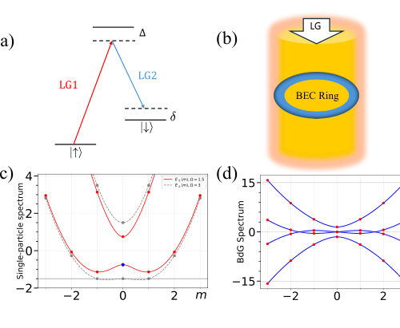
<figcaption class="paper-figure-caption"><b>Fig 1.</b> FIG. 1. (a) Raman coupling between the two internal states of the BEC. (b) Schematic illustration of the ring geometry and Raman beams. (c) Single-particle energy spectrum for Ω= 1.5 (red) and Ω= 3 (gray dashed), with l = 1 and the relevant modes indicated by dots. (d) BdG spectrum of a BEC condensed in the mode marked by the blue point in (c); the spectrum is dynamically stable with all eigenvalues real.</figcaption>
</figure>
<figure class="paper-figure-card">
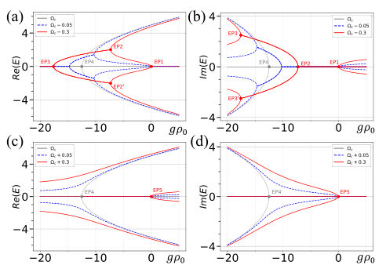
<figcaption class="paper-figure-caption"><b>Fig 2.</b> FIG. 2. Evolution of the BdG spectrum across the critical Raman coupling for n = 1, l = 1, m0 = δ = 0, with Ωc = 3. (a) Real and (b) imaginary parts of the BdG eigenvalues for Ω= 2.95 (blue dashed), Ω= 2.7 (red solid), and Ω= 3 (gray). (c) Real and (d) imaginary parts of the BdG eigenvalues for Ω= 3.05 (blue dashed), Ω= 3.3 (red solid), and Ω= 3 (gray). The corresponding EPs are indicated by the labels.</figcaption>
</figure>
<figure class="paper-figure-card">
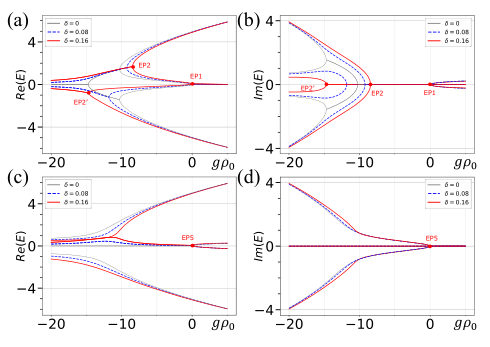
<figcaption class="paper-figure-caption"><b>Fig 3.</b> FIG. 3. Effect of a finite two-photon detuning on the BdG spectrum for n = 1, l = 1, and m0 = 0. (a) Real and (b) imaginary parts of the BdG eigenvalues for Ω= 2.95 &lt; Ωc, with δ = 0 (gray), δ = 0.08 (blue dashed), and δ = 0.16 (red solid). (c) Real and (d) imaginary parts of the BdG eigenvalues for Ω= 3.05 &gt; Ωc with the same values of δ. For Ω&lt; Ωc, a finite detuning lifts the degeneracy between opposite angular-momentum sectors and splits the double-EP structure into two independent second-order EPs.</figcaption>
</figure>
<figure class="paper-figure-card">
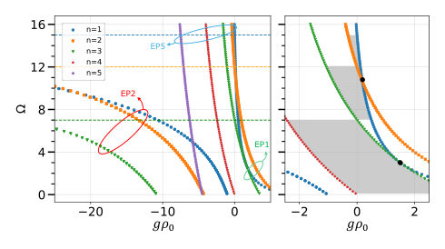
<figcaption class="paper-figure-caption"><b>Fig 4.</b> FIG. 4. Exceptional-point landscape in the (g, Ω) parame- ter space for l = 2, m0 = 0, and δ = 0. The left panel shows the EP trajectories for the angular-momentum sectors n = 1, . . . , 5. The horizontal dashed lines indicate the cor- responding critical Raman couplings. The right panel en- larges the weak-interaction region relevant for quantum sens- ing. The gray shaded region denotes the globally stable pa- rameter regime in which no angular-momentum sector has en- tered the PT-broken phase. The black dots indicate intersec- tions between EP trajectories of different angular-momentum sectors and represent candidate operating points for multi- mode sensing.</figcaption>
</figure>
<figure class="paper-figure-card">
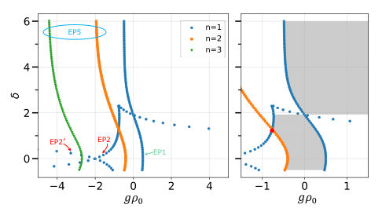
<figcaption class="paper-figure-caption"><b>Fig 5.</b> FIG. 5. Exceptional-point landscape in the (g, δ) parameter space for l = 1, m0 = 0, and Ω= 1. The left panel shows the EP trajectories for the angular-momentum sectors n = 1, 2, 3. The right panel shows an enlarged view of the region containing globally stable parameters (gray shaded area) and the multimode EP intersection (red dot).</figcaption>
</figure>
</div>

<p><strong>Summary.</strong> The authors propose using a spin-orbit-angular-momentum coupled Bose-Einstein condensate as a tunable platform for quantum sensing based on Exceptional Points (EPs). They show that by approaching EPs from the stable regime, the quantum sensing limit (QFI) can be strongly enhanced. Crucially, the system's multimode nature allows for the linear summation of these enhancements from multiple independent EP channels, all accessible via a measurable spin-density measurement.</p>
<p><strong>Why it may be interesting.</strong> This work directly applies advanced concepts from non-Hermitian physics (EPs) to a highly controllable, experimentally relevant quantum system (BEC), providing a pathway to quantum metrology enhancement without engineered gain/loss.</p>
<details>
<summary>Detailed structure</summary>
<p><strong>Main problem.</strong> To develop a tunable Exceptional Point (EP) sensing platform for quantum sensing that avoids the noise penalty associated with conventional gain/loss in non-Hermitian systems.</p>
<p><strong>Main result.</strong> The system achieves strong quantum Fisher information enhancement by approaching EPs from the stable PT-symmetric regime, and this enhancement can be linearly summed by tuning multiple independent EP channels.</p>
<p><strong>Method.</strong> The analysis involves deriving the Bogoliubov dynamical matrix from a microscopic Hamiltonian and mapping the EP trajectories and associated stability landscapes.</p>
<p><strong>Model / system.</strong> The platform is a spin-orbit-angular-momentum (SOAM)-coupled Bose-Einstein condensate (BEC) trapped in a ring geometry. The dynamics are analyzed using the Bogoliubov approximation, leading to a PT-symmetric dynamical matrix.</p>
<p><strong>Key observables.</strong> Quantum Fisher Information (QFI), gap-opening rate, and spin-density measurement protocols.</p>
<p><strong>Important parameters / regimes.</strong> Raman coupling strength ($\Omega$), two-photon detuning ($\delta$), and interaction parameters ($g$).</p>
<p><strong>Assumptions / limitations.</strong> The analysis assumes the condensate is initialized to the lower-energy steady state and relies on the Bogoliubov approximation (weak depletion regime).</p>
<p><strong>Figures summary.</strong> Figures illustrate the Raman coupling setup, the single-particle energy spectrum, and the BdG spectrum showing dynamic stability across different coupling regimes.</p>
<p><strong>Paper structure.</strong> The paper first sets up the SOAM-coupled BEC model and derives the PT-symmetric Bogoliubov dynamical matrix. It then maps the EP trajectories, demonstrating QFI enhancement near EPs. Finally, it shows how multiple independent EP channels can be tuned to overlap, leading to additive QFI enhancement via a measurable spin-density protocol.</p>
</details>
<details>
<summary>Abstract</summary>
<p>Exceptional points (EPs) can induce strongly amplified responses to weak perturbations, but enhanced spectral sensitivity in conventional non-Hermitian systems does not necessarily translate into improved quantum-limited sensing because of the associated gain and loss noise. Here, we investigate a tunable EP sensing platform based on the intrinsic non-Hermitian Bogoliubov dynamics of a spin-orbit-angular-momentum-coupled Bose-Einstein condensate. Starting from a fully Hermitian microscopic Hamiltonian, we derive a Bogoliubov dynamical matrix that exhibits parity-time (PT) symmetry, with EPs tunable through the Raman coupling and interaction parameters. We identify multiple EPs and map their trajectories and associated stability landscapes, revealing strong quantum Fisher information enhancement when the EPs are approached from the PT-symmetric stable regime. We further find that the gap-opening rate around a second-order EP provides a useful relative indicator for comparing the sensing performance of EPs, while higher-order EPs are not necessarily accessible from the stable regime. Moreover, two second-order EPs can be tuned to overlap, allowing their sensing contributions to add and yielding a linear enhancement of the total quantum Fisher information. Finally, we show that a spin-density measurement can approach the quantum Fisher information limit, providing an experimentally accessible route to tunable EP-enhanced quantum sensing in Bose-Einstein condensates.</p>
</details>
<p><sub><a href="#top">↑ back to top</a></sub></p>

<p><a id="paper-2608.30723"></a></p>
<h3 id="a-truncated-majorana"><a href="http://arxiv.org/abs/2608.30723v1">A Truncated Majorana</a></h3>
<p><strong>Authors:</strong> Ali Vahedi<br>
<strong>Type:</strong> theory · <strong>Category:</strong> other · <strong>PDF:</strong> <a href="https://arxiv.org/pdf/2608.30723v1">https://arxiv.org/pdf/2608.30723v1</a><br>
<strong>Analysis basis:</strong> full PDF text, analyzed in chunks
<strong>Topic relevance:</strong> <code>Keldysh / 2PI / non-Gaussian methods</code> <strong>3/5</strong> · <code>methods for driven-dissipative</code> <strong>2/5</strong> · <code>analog quantum simulation</code> <strong>1/5</strong> · <code>correlated / nonlocal dissipation</code> <strong>1/5</strong> · <code>driven-dissipative phase transition</code> <strong>1/5</strong> · <code>non-equilibrium universality</code> <strong>1/5</strong> · <code>quantum measurements</code> <strong>1/5</strong></p>
<div class="figure-strip-hint">↔ Scroll figures horizontally</div>
<div class="paper-figures-scroll">
<figure class="paper-figure-card">
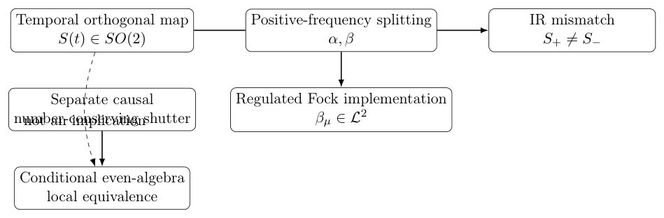
<figcaption class="paper-figure-caption"><b>Fig 1.</b> Figure 1: Logical separation of the two benchmark layers. The infrared theorem belongs to the temporal orthogonal channel model. The local-equivalence result belongs to the separate causal, number-conserving shutter.</figcaption>
</figure>
<figure class="paper-figure-card">
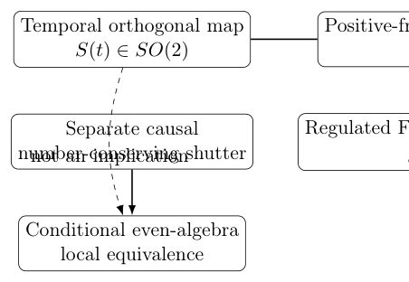
<figcaption class="paper-figure-caption"><b>Fig 2.</b> Figure 1 summarizes the logical structure.</figcaption>
</figure>
</div>

<p><strong>Summary.</strong> This paper analyzes the concept of 'truncating' a Majorana wave packet by modeling it as a time-dependent channel operation on a $1+1$D Majorana field. It establishes that the global failure of the operation leads to an infrared memory effect, while the local, number-conserving limit shows the process is equivalent to a simple causal filter. These two distinct mathematical descriptions are shown to be complementary diagnostics of the same underlying physical operation.</p>
<p><strong>Why it may be interesting.</strong> The rigorous field-theoretic foundation provided for time-dependent control in topological platforms offers a powerful benchmark for understanding how boundary conditions or operational constraints affect quantum information storage.</p>
<details>
<summary>Detailed structure</summary>
<p><strong>Main problem.</strong> The paper investigates the quantum field dynamics of 'truncating' a Majorana wave packet by modeling the process as a time-dependent modification of its chiral propagation, rather than a literal spatial cut.</p>
<p><strong>Main result.</strong> It demonstrates that global channel mismatch induces an infrared soft-mode memory (logarithmic divergence), while the number-conserving local limit shows the process is equivalent to a pure causal filtering operation.</p>
<p><strong>Method.</strong> The analysis uses Bogoliubov transformations and field-theoretic identities to compare the global asymptotic behavior (infrared limit) with the local, number-conserving regime.</p>
<p><strong>Model / system.</strong> The system is a $1+1$D massless Majorana field ($\chi_R, \chi_L$) subjected to an idealized time-dependent orthogonal channel rotation $S(t)$.</p>
<p><strong>Key observables.</strong> The anomalous Bogoliubov block $eta(\omega, 
u)$, the Hilbert-Schmidt norm divergence ($\propto \log(\omega^*/\mu)$), and the equivalence between the retained sector and a single-particle state.</p>
<p><strong>Important parameters / regimes.</strong> The asymptotic channel identification difference ($\Delta S = S_+ - S_-$) and the number-conserving regime ($eta=0$).</p>
<p><strong>Assumptions / limitations.</strong> The analysis relies on treating the channel map $S(t)$ as an idealized orthogonal rotation, and the results are separated into global (temporal) and local (number-conserving) limits.</p>
<p><strong>Figures summary.</strong> Figure 1 summarizes the logical separation between the infrared theorem (temporal orthogonal channel model) and the local equivalence result (causal, number-conserving shutter).</p>
<p><strong>Paper structure.</strong> The paper develops the problem by analyzing the failure of the transformation to preserve the positive-frequency subspace ($eta$), contrasting the global infrared obstruction arising from channel mismatch with the local equivalence established in the number-conserving limit.</p>
</details>
<details>
<summary>Abstract</summary>
<p>We investigate the quantum field dynamics of truncating a Majorana wave packet via a time-dependent channel shutter. Modeling truncation as a controlled modification of chiral propagation rather than a literal spatial cut, we analyze a $1+1$D massless Majorana field subjected to a time-dependent rotation between its chiral components. We demonstrate that this protocol manifests two complementary physical limits. Globally, a mismatch between early- and late-time channel identifications induces a fermionic Bogoliubov transformation. We prove this asymptotic change universally generates an infrared soft-mode memory, $β(ω, ν) \propto (ω+ν)^{-1}$, leading to a logarithmic divergence in the Hilbert--Schmidt norm. This orthogonality-catastrophe-like obstruction persists even under infinitely smooth switching in the massless limit. Conversely, in the number-conserving regime where pair production vanishes, the shutter acts as a purely causal filter. We establish exact local field identities showing that, restricted to the even local observable algebra, the retained sector is exactly equivalent to a single-particle state while the discarded sector reduces to the vacuum. Ultimately, we show that global infrared memory and local causal truncation are complementary diagnostics of the same dynamical operation. These results provide a rigorous field-theoretic foundation for time-dependent control in topological platforms, cleanly separating effective operational benchmarks from microscopic boundary dynamics.</p>
</details>
<p><sub><a href="#top">↑ back to top</a></sub></p>

<p><a id="paper-2608.30886"></a></p>
<h3 id="signatures-of-inter-sideband-coherence-in-the-resonance-fluorescence-spectrum-of-an-acoustically-modulated-quantum-dot"><a href="http://arxiv.org/abs/2608.30886v1">Signatures of inter-sideband coherence in the resonance fluorescence spectrum of an acoustically-modulated quantum dot</a></h3>
<p><strong>Authors:</strong> Rafał A. Bogaczewicz, Hubert J. Krenner, Paweł Machnikowski<br>
<strong>Type:</strong> theory · <strong>Category:</strong> other · <strong>PDF:</strong> <a href="https://arxiv.org/pdf/2608.30886v1">https://arxiv.org/pdf/2608.30886v1</a><br>
<strong>Analysis basis:</strong> full PDF text, analyzed in chunks
<strong>Topic relevance:</strong> <code>interference shaping light</code> <strong>3/5</strong> · <code>Keldysh / 2PI / non-Gaussian methods</code> <strong>1/5</strong> · <code>Tavis-Cummings &amp; cavity-many-emitter</code> <strong>1/5</strong> · <code>analog quantum simulation</code> <strong>1/5</strong> · <code>correlated / nonlocal dissipation</code> <strong>1/5</strong> · <code>driven-dissipative phase transition</code> <strong>1/5</strong> · <code>methods for driven-dissipative</code> <strong>1/5</strong> · <code>quantum measurements</code> <strong>1/5</strong></p>
<div class="figure-strip-hint">↔ Scroll figures horizontally</div>
<div class="paper-figures-scroll">
<figure class="paper-figure-card">
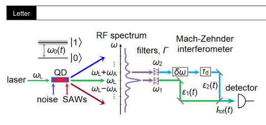
<figcaption class="paper-figure-caption"><b>Fig 1.</b> Fig. 1. Schematic representation of the theoretical setup. Left: A QD with a time-modulated transition frequency (indicated by the shaded area). Center: Two Lorentzian filters with band- width Γ are tuned to selected sidebands in the output signal. Right: The selected beams enter a Mach-Zehnder interferome- ter. One arm incorporates an external frequency shift δω and a time delay τd.</figcaption>
</figure>
<figure class="paper-figure-card">
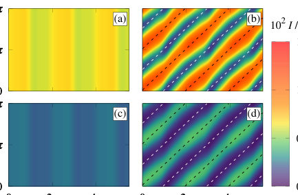
<figcaption class="paper-figure-caption"><b>Fig 2.</b> Fig. 2. Incoherent (a, c) and coherent (b, d) superpositions of the light beams from the ZPL (k1 = 0) and the first PSB (k2 = 1). Panels (a, b) show the noise-free case (D = 0), while (c, d) incorporate white noise (D = 0.05ωA). Here ωL = ω0 and δω = 0. Black and white dashed lines in (b, d) represent the analytical trajectories for maximal and minimal intensities, respectively.</figcaption>
</figure>
<figure class="paper-figure-card">
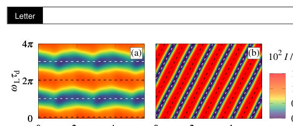
<figcaption class="paper-figure-caption"><b>Fig 3.</b> Fig. 3. Coherent interference intensities without noise (D = 0) and under resonant (ωL = ω0) driving. (a) Superposition of the ZPL and the first right PSB, (k1, k2) = (0, 1), under the resonance shift condition δω = ωA. (b) Superposition of the left and right first-order PSBs, (k1, k2) = (−1, 1), without an external shift (δω = 0). Black and white dashed lines represent the analytical trajectories for maximal and minimal intensities, respectively.</figcaption>
</figure>
<figure class="paper-figure-card">
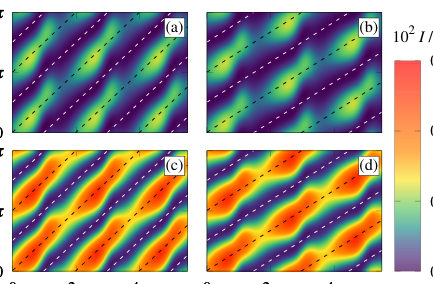
<figcaption class="paper-figure-caption"><b>Fig 4.</b> Fig. 4. Coherent interference intensities for ωL = ω0 + ωA/3 under the (k1, k2) = (0, 1) configuration. Panels (a, c) show δω = 0, while (b, d) show δω = ωA/3. Results for the noise- free case (a, b) and D = 0.05ωA (c, d). Black and white dashed lines denote the analytical trajectories for maximal and mini- mal intensities, respectively.</figcaption>
</figure>
</div>

<p><strong>Summary.</strong> The authors developed a theoretical framework to measure inter-sideband phase coherence in an acoustically-modulated quantum dot using resonance fluorescence. They show that the geometric slant of the resulting 2D interferogram is a robust diagnostic tool that remains visible even when subjected to environmental white noise. This technique offers a practical method to verify quantum coherence in solid-state quantum emitters.</p>
<p><strong>Why it may be interesting.</strong> This work provides a concrete, measurable spectroscopic signature (the fringe slant) to diagnose fundamental quantum coherence in solid-state emitters, which is crucial for developing scalable quantum information platforms.</p>
<details>
<summary>Detailed structure</summary>
<p><strong>Main problem.</strong> The paper theoretically investigates the inter-sideband phase coherence within the resonance fluorescence spectrum of an acoustically-modulated quantum dot.</p>
<p><strong>Main result.</strong> The geometric slant of the two-dimensional interferogram serves as a robust, noise-resilient indicator of phase coherence between spectral sidebands, essential for quantum networking.</p>
<p><strong>Method.</strong> The analysis employs a filtered-field formalism applied to a Mach-Zehnder interferometer setup, analyzing time-dependent correlation functions.</p>
<p><strong>Model / system.</strong> The system is a quantum dot (modeled as a two-level system) coupled to an optical field and modulated by Surface Acoustic Waves (SAWs). The fluorescence spectrum contains a central line and sidebands.</p>
<p><strong>Key observables.</strong> The geometric slant of the interferograms, total intensity $I_{	ext{tot}}(t)$, and the sideband separation relationship $\omega_L	au_d = N\pi - \left(rac{k_1 - k_2 + \delta\omega}{\omega_A}
ight)\omega_A t - 	heta_{k_1,k_2}$.</p>
<p><strong>Important parameters / regimes.</strong> Acoustic modulation frequency ($\omega_A$), environmental white noise diffusion coefficient ($D$), and the detuning ($\delta\omega$).</p>
<p><strong>Assumptions / limitations.</strong> The analysis assumes the system reaches a stationary state and that the acoustic modulation provides sufficient phase stability to protect the coherence signature.</p>
<p><strong>Figures summary.</strong> Figures illustrate the comparison between coherent (slanted) and incoherent (vertical) interference patterns in the 2D interferograms, demonstrating the characteristic slant under different sideband selections and noise levels.</p>
<p><strong>Paper structure.</strong> The paper builds from deriving the intensity components using autocorrelation functions, establishing the diagnostic tool (the fringe slant) via the phase-matching condition, and finally demonstrating its robustness against environmental noise.</p>
</details>
<details>
<summary>Abstract</summary>
<p>We theoretically investigate the inter-sideband phase coherence within the resonance fluorescence spectrum of an acoustically modulated quantum dot using a filtered-field formalism for a Mach-Zehnder configuration. We demonstrate that geometric slant of the interferograms provides an indicator of phase coherence that is resilient to environmental white noise. Specifically, noise-induced spectral diffusion reduces the global fringe intensity, while leaving the characteristic inclination strictly invariant. Our findings establish a framework for verifying single-photon coherence between spectral sidebands, essential for frequency-bin encoding and scalable quantum networking in realistic, noisy solid-state architectures.</p>
</details>
<p><sub><a href="#top">↑ back to top</a></sub></p>

<p><a id="paper-2608.29200"></a></p>
<h3 id="fully-integrated-continuous-variable-quantum-key-distribution-with-composable-security-over-100-km"><a href="http://arxiv.org/abs/2608.29200v1">Fully integrated continuous-variable quantum key distribution with composable security over 100 km</a></h3>
<p><strong>Authors:</strong> Yankai Xu, Xinhang Li, Tao Wang, Jisheng Dai, Xueqin Jiang, Yuyao Guo, Peng Huang, Linjie Zhou, Guihua Zeng<br>
<strong>Type:</strong> experiment · <strong>Category:</strong> quantum information and computing · <strong>PDF:</strong> <a href="https://arxiv.org/pdf/2608.29200v1">https://arxiv.org/pdf/2608.29200v1</a><br>
<strong>Analysis basis:</strong> full PDF text, analyzed in chunks
<strong>Topic relevance:</strong> <code>QC/QI experiment</code> <strong>3/5</strong> · <code>quantum optics experiment</code> <strong>3/5</strong> · <code>quantum measurements</code> <strong>2/5</strong> · <code>interference shaping light</code> <strong>1/5</strong></p>
<div class="figure-strip-hint">↔ Scroll figures horizontally</div>
<div class="paper-figures-scroll">
<figure class="paper-figure-card">
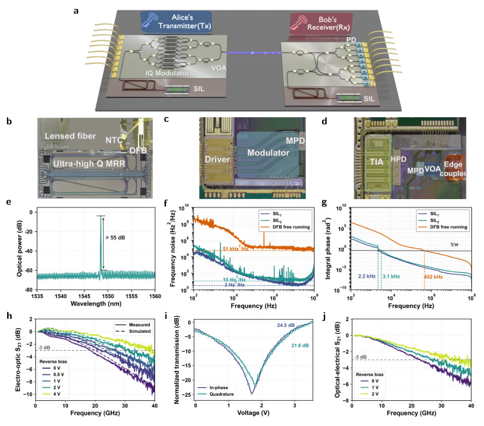
<figcaption class="paper-figure-caption"><b>Fig 1.</b> Figure 1: Characteristics of integrated transceiver system. (a) System schematic of Alice’s transmitter and Bob’s receiver connected by the quantum link. (b) Hybrid SIL laser package, showing lensed-fibre coupling, the negative temperature coefficient (NTC) thermistor, the DFB gain chip, and the ultra-high-Q MRR feedback chip. (c) Transmitter package with the quad-channel driver, silicon modulator, and monitor photodiode. (d) Receiver package with the TIA, hybrid photodiode, monitor photodiode, and variable optical attenuator. (e) Optical spectrum of the SIL laser, showing an SMSR exceeding 55 dB. (f) Frequency-noise spectra of the two SIL lasers and the free-running DFB reference. (g)...</figcaption>
</figure>
<figure class="paper-figure-card">
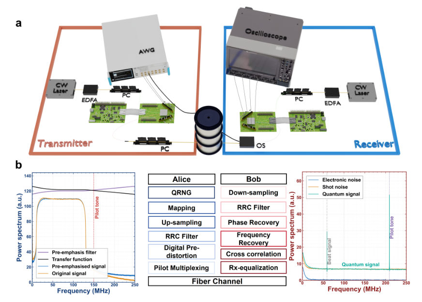
<figcaption class="paper-figure-caption"><b>Fig 2.</b> Figure 2: Integrated LLO CV-QKD system and DSP chain. (a) Alice’s transmitter and Bob’s receiver, including the integrated laser modules, silicon transmitter, silicon receiver, erbium-doped fibre amplifier (EDFA), polarization controllers (PCs), optical switch (OS), and fibre spools. (b) Transmitter and receiver DSP chains.</figcaption>
</figure>
<figure class="paper-figure-card">
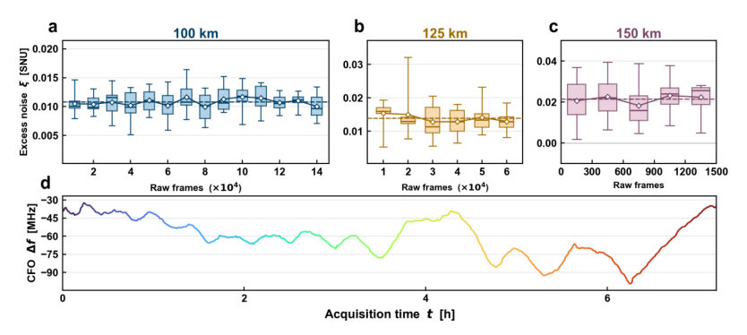
<figcaption class="paper-figure-caption"><b>Fig 3.</b> Figure 3: Excess-noise measurements and carrier-frequency tracking. (a)–(c) Input-referred excess noise ξ over acquisition blocks at 100, 125, and 150 km. (d) Pilot-estimated CFO, defined as the frequency difference between Alice’s and Bob’s free-running local-oscillator laser during the 100 km acquisition.</figcaption>
</figure>
<figure class="paper-figure-card">
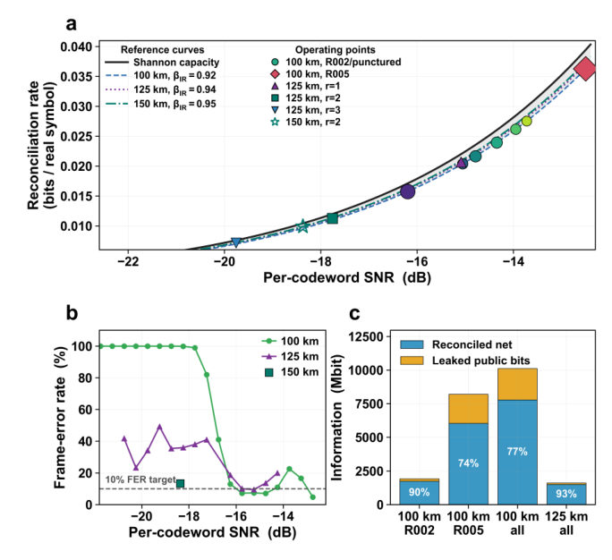
<figcaption class="paper-figure-caption"><b>Fig 4.</b> Figure 4: SNR-adaptive reconciliation. (a) Reconciliation rate as a function of the publicly disclosed per- codeword SNR. (b) FER after public-coordinate disclosure at β = 0.92, 0.94 and 0.95. (c) Verified information bits and public disclosure used in the 100 and 125 km reconciliation analysis.</figcaption>
</figure>
<figure class="paper-figure-card">
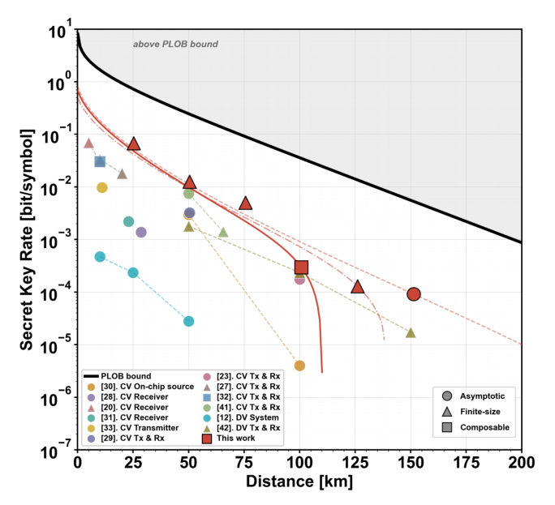
<figcaption class="paper-figure-caption"><b>Fig 5.</b> Figure 5: Secret-key rates of integrated QKD systems. Secret-key rate per symbol for this work and previous chip-based QKD demonstrations [12,20,23,27–33,41,42].</figcaption>
</figure>
</div>

<p><strong>Summary.</strong> This paper reports a fully integrated Continuous-Variable Quantum Key Distribution (CV-QKD) platform capable of operating over long distances (up to 150 km) using chip-scale photonics. By combining advanced components, a machine-learning phase-locking algorithm, and rate-matched reconciliation, the authors achieved high secret-key rates while maintaining composable security. This work significantly advances the feasibility of practical, chip-based quantum networks.</p>
<p><strong>Why it may be interesting.</strong> This work directly addresses the engineering bottleneck of quantum networking by demonstrating a fully integrated, chip-scale solution for CV-QKD, which is crucial for realizing practical quantum internet infrastructure.</p>
<details>
<summary>Detailed structure</summary>
<p><strong>Main problem.</strong> Scaling Quantum Key Distribution (QKD) to network levels requires compact, manufacturable photonic terminals while maintaining high security over long distances.</p>
<p><strong>Main result.</strong> The authors demonstrated a fully integrated CV-QKD platform achieving a certified secret-key rate of 29.3 kbps at 100 km, establishing records for reach and rate in integrated chip-based QKD.</p>
<p><strong>Method.</strong> The system uses a co-designed digital chain involving a Bayesian machine-learning algorithm for phase lock and rate-matched multidimensional reconciliation for key extraction.</p>
<p><strong>Model / system.</strong> The platform integrates two hybrid III-V/Si3N4 lasers, a silicon transmitter, and a silicon coherent receiver, operating over fiber links up to 150 km using a Local Local Oscillator (LLO).</p>
<p><strong>Key observables.</strong> Composable finite-size secret-key rate (e.g., 29.3 kbps at 100 km), excess noise ($\xi$), and intrinsic laser linewidths (10 and 30 Hz).</p>
<p><strong>Important parameters / regimes.</strong> Long-distance transmission (100-150 km), finite-size security analysis ($\epsilon \leq 6 	imes 2^{-32}$), and the Shannon limit approach.</p>
<p><strong>Assumptions / limitations.</strong> The security analysis relies on a composable finite-size framework, and the system performance is limited by residual phase noise ($\xi_{RPN}$).</p>
<p><strong>Figures summary.</strong> Figures illustrate the integrated platform components, the end-to-end workflow from signal generation to key extraction, and the measured excess noise ($\xi$) across various distances.</p>
<p><strong>Paper structure.</strong> The paper details the integrated hardware platform, analyzes noise sources (RIN, preparation, phase noise), presents the advanced phase-locking and reconciliation algorithms, and finally reports the key rate performance across increasing distances.</p>
</details>
<details>
<summary>Abstract</summary>
<p>Quantum key distribution (QKD) guarantees information-theoretic security by the laws of physics, but deployment at scale requires compact, manufacturable photonic terminals. Continuous-variable QKD (CV-QKD) is well suited for this transition through telecom-compatible, room-temperature coherent detection. However, unifying full on-chip core terminal integration, room-temperature operation, high loss tolerance, and composable end-to-end security in long-distance QKD remains a key bottleneck. Here we report a fully integrated CV-QKD platform in which two hybrid III--V/Si$_3$N$_4$ integrated lasers, a silicon transmitter, and a silicon coherent receiver implement the core terminal functions, operating with a local local oscillator (LLO) over fibre links of 25--150 km. A Bayesian machine-learning algorithm maintains robust phase lock throughout the long records required for composable security, consistently outperforming the conventional unscented Kalman filter, while rate-matched multidimensional reconciliation approaches the Shannon limit. The system certifies a composable finite-size secret-key rate of 29.3 kbps at 100 km from a 140-billion-symbol block, with 12.9 kbps at 125 km under finite-size analysis and 9.17 kbps at 150 km under asymptotic analysis. By establishing the longest finite-size and asymptotic reaches and the highest secret-key rate per symbol reported for integrated CV-QKD, this work advances the development of practical chip-based quantum networks.</p>
</details>
<p><sub><a href="#top">↑ back to top</a></sub></p>

<p><a id="paper-2608.30539"></a></p>
<h3 id="mass-gap-functional-determinant-approach-for-mobile-fermi-polarons"><a href="http://arxiv.org/abs/2608.30539v1">Mass-gap functional determinant approach for mobile Fermi polarons</a></h3>
<p><strong>Authors:</strong> Emilio Ramos Rodríguez, Eugen Dizer, Xin Chen, Richard Schmidt<br>
<strong>Type:</strong> theory · <strong>Category:</strong> quantum gases · <strong>PDF:</strong> <a href="https://arxiv.org/pdf/2608.30539v1">https://arxiv.org/pdf/2608.30539v1</a><br>
<strong>Analysis basis:</strong> full PDF text, analyzed in chunks
<strong>Topic relevance:</strong> <code>Keldysh / 2PI / non-Gaussian methods</code> <strong>3/5</strong> · <code>analog quantum simulation</code> <strong>3/5</strong> · <code>methods for driven-dissipative</code> <strong>2/5</strong> · <code>correlated / nonlocal dissipation</code> <strong>1/5</strong></p>
<div class="figure-strip-hint">↔ Scroll figures horizontally</div>
<div class="paper-figures-scroll">
<figure class="paper-figure-card">
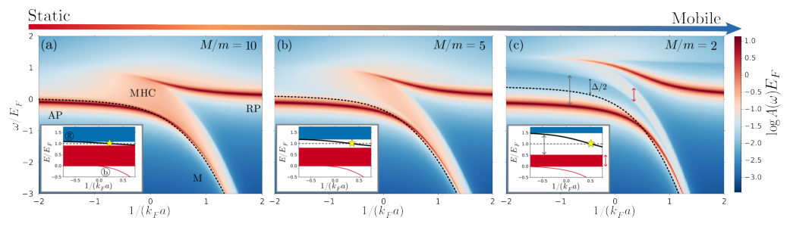
<figcaption class="paper-figure-caption"><b>Fig 1.</b> FIG. 1. Single- and many-body spectrum of the mass-gap model. Many-body absorption spectrum A(ω) of the Fermi polaron at zero momentum obtained from the mass-gap FDA for different impurity-fermion mass ratios (a) M/m = 10, (b) M/m = 5, and (c) M/m = 2. The spectra show three distinct features: the attractive polaron (AP) and repulsive polaron (RP) branches, and the molecule-hole continuum (MHC). The dashed black line denotes the energy of the molecule (M) obtained from the mass-gap model [50]. Inset: Single-particle energy spectrum of the mass-gap Hamiltonian ˆ H obtained from exact diagonalization, as a function of interaction strength 1/(kF a). The discrete bound state b and in-gap state...</figcaption>
</figure>
<figure class="paper-figure-card">

<figcaption class="paper-figure-caption"><b>Fig 2.</b> FIG. 2. Transition from static to mobile impurity. Spectral function A(ω) of the Fermi polaron for different mass ratios at inverse scattering length 1/(kF a) = −0.5. Inset: Ramsey signals |S(t)| of each corresponding spectrum, where the dashed lines indicate the quasiparticle weight plateau, Z = |S(t →∞)|2.</figcaption>
</figure>
<figure class="paper-figure-card">

<figcaption class="paper-figure-caption"><b>Fig 3.</b> FIG. 3. Comparison to the variational Chevy ansatz. Ramsey signal |S(t)| for a 133Cs impurity in a 6Li Fermi gas (M/m ≈22) at interaction strengths (a) 1/(kF a) = −0.2 and (b) 1/(kF a) = 0.2, computed from the mass-gap FDA (blue), the Chevy ansatz [27] (black), and the infinite-mass FDA (red). Panels (c) and (d) show the corresponding impu- rity absorption spectrum A(ω).</figcaption>
</figure>
</div>

<p><strong>Summary.</strong> This paper develops and applies the mass-gap functional determinant approach to study Fermi polarons, which are impurities coupled to a Fermi gas. It successfully models the crossover between the static regime, characterized by the Fermi-edge singularity, and the mobile regime, where coherent quasiparticles form. The framework provides a quantitative description of how impurity motion regularizes the spectral features and dynamics.</p>
<p><strong>Why it may be interesting.</strong> This work is highly relevant to AMO physics as it provides a rigorous theoretical tool to model impurity dynamics in ultracold atomic gases (Fermi polarons), which is a major platform for studying strongly correlated quantum many-body physics.</p>
<details>
<summary>Detailed structure</summary>
<p><strong>Main problem.</strong> The paper extends the functional determinant approach (FDA) to describe the quantum dynamics of mobile impurities (Fermi polarons) coupled to a Fermi sea, bridging the gap between static and mobile impurity physics.</p>
<p><strong>Main result.</strong> The mass-gap FDA provides a unified and computationally efficient framework that smoothly interpolates between the Fermi-edge singularity (static limit) and the formation of coherent quasiparticles (mobile limit).</p>
<p><strong>Method.</strong> The authors employ the functional determinant approach (FDA) applied to the quadratic mass-gap Hamiltonian derived from the Lee-Low-Pines model, utilizing Wick's theorem and mean-field approximations.</p>
<p><strong>Model / system.</strong> The system is a Fermi polaron, modeled by the Lee-Low-Pines Hamiltonian, where a mobile impurity interacts with a surrounding Fermi gas. The key theoretical tool is the mass-gap FDA, which exploits the quadratic structure of the effective Hamiltonian.</p>
<p><strong>Key observables.</strong> Spectral function A(omega), Ramsey signal S(t), Quasiparticle weight Z, and the Mass Gap $\Delta(M)$.</p>
<p><strong>Important parameters / regimes.</strong> Mass ratio ($M/m$), Fermi momentum ($k_F$), and the mass gap $\Delta(M) = k_F^2/M$.</p>
<p><strong>Assumptions / limitations.</strong> The analysis relies on the mass-gap Hamiltonian being quadratic, and later sections employ mean-field approximations and perturbative expansions in the interaction strength.</p>
<p><strong>Figures summary.</strong> Figures illustrate the single- and many-body spectra for varying mass ratios, showing Anti-Polaron (AP), Repulsive Polaron (RP), and Molecule-Hole Continuum (MHC). They also compare the time evolution of the Ramsey signal S(t) and the spectral function A(omega) across different theoretical methods.</p>
<p><strong>Paper structure.</strong> The paper establishes the mass-gap FDA by analyzing the LLP Hamiltonian, derives key observables like S(t) and A(omega), and then systematically demonstrates the interpolation between the static Orthogonality Catastrophe limit and the finite-mass quasiparticle regime, comparing results against alternative methods like the Chevy ansatz.</p>
</details>
<details>
<summary>Abstract</summary>
<p>We extend the functional determinant approach (FDA), previously restricted to static impurities, to the case of finite-mass impurities by using the mass-gap description of Fermi polarons [Phys. Rev. Lett. 135, 193401 (2025)]. The quadratic structure of the mass-gap model enables the exact evaluation of many-body spectra and Ramsey dynamics for mobile impurities. We show that this mass-gap FDA smoothly interpolates between the Fermi-edge singularity for infinitely heavy impurities and the emergence of quasiparticle weight for finite impurity mass. Our results demonstrate that the mass-gap FDA provides a transparent and computationally efficient framework to describe the quantum dynamics of mobile impurities.</p>
</details>
<p><sub><a href="#top">↑ back to top</a></sub></p>

<p><a id="paper-2608.29302"></a></p>
<h3 id="a-spectral-identifiability-threshold-for-dissipative-rate-recovery-from-truncated-liouvillian-spectra"><a href="http://arxiv.org/abs/2608.29302v1">A Spectral Identifiability Threshold for Dissipative Rate Recovery from Truncated Liouvillian Spectra</a></h3>
<p><strong>Authors:</strong> Yujun Ji, Somyajit Chakraborty<br>
<strong>Type:</strong> theory · <strong>Category:</strong> other · <strong>PDF:</strong> <a href="https://arxiv.org/pdf/2608.29302v1">https://arxiv.org/pdf/2608.29302v1</a><br>
<strong>Analysis basis:</strong> full PDF text, analyzed in chunks
<strong>Topic relevance:</strong> <code>methods for driven-dissipative</code> <strong>3/5</strong> · <code>quantum measurements</code> <strong>2/5</strong> · <code>correlated / nonlocal dissipation</code> <strong>1/5</strong> · <code>driven-dissipative phase transition</code> <strong>1/5</strong> · <code>non-equilibrium universality</code> <strong>1/5</strong></p>
<div class="figure-strip-hint">↔ Scroll figures horizontally</div>
<div class="paper-figures-scroll">
<figure class="paper-figure-card">

<figcaption class="paper-figure-caption"><b>Fig 1.</b> FIG. 1. Workflow of the direct-spectrum identifiability benchmark. (a) Six-qubit Lindblad model with local amplitude damping γ1 and dephasing γϕ. (b) Non-steady Liouvillian eigenvalues after removal of the steady mode. (c) Eigenvalues are ordered by decreasing real part to form truncated spectral inputs. In the populations-first regime, the first D −1 non-steady population modes are independent of γϕ, and the first dephasing-sensitive coherence appears at m = D, yielding the identifiability requirement k ≥D. (d) Linear and tabular estimators map the retained spectral features to (γ1, γϕ). (e) The measured recovery thresholds occur at k⋆= 13 for γ1 and k⋆= 64 = D for γϕ at n = 6. (f) The...</figcaption>
</figure>
<figure class="paper-figure-card">

<figcaption class="paper-figure-caption"><b>Fig 2.</b> FIG. 2. Matched comparison curves over k = 80, . . . , 400. (a) Joint MAE, (b) γ1 MAE, and (c) γϕ MAE. Markers show the mean over three trials and error bars one standard deviation across them. The three trials are overlapping partitions of the same 1000 rate pairs, not independent datasets, so the bars are descriptive spread rather than sampling error</figcaption>
</figure>
<figure class="paper-figure-card">

<figcaption class="paper-figure-caption"><b>Fig 3.</b> FIG. 3. Low-lying Liouvillian coordinate diagnostics from the k = 80 dataset. (a,b) Selected sorted real coordinates along narrow rate slices; (c) the fraction of samples with nearly degenerate adjacent sorted real coordinates. The degeneracy pattern is a rank-stability warning: sorted coordinates are useful predictive features, but should not be interpreted as globally tracked physical eigenmode identities without additional eigenvector tracking</figcaption>
</figure>
<figure class="paper-figure-card">

<figcaption class="paper-figure-caption"><b>Fig 4.</b> FIG. 4. Analytical and simple-baseline diagnostics. (a) Joint MAE for ordinary least squares, ridge regression, and random forests fit on the same nested spectral CSVs used by the main benchmark, with the saved AutoGluon curve overlaid from the AutoGluon resolution summary. (b) Target-wise MAE for the saved AutoGluon runs, the ridge γϕ baseline, and the one- coordinate slowest-gap γ1 estimator −eig_real_000. The near-exact least-squares performance at larger k confirms the affine structure of equation (1) for this fixed, computational-basis-diagonal generator. Thus the AutoGluon point should be read as the lowest-error point within the saved four-family boosted-tree/AutoML benchmark, not as...</figcaption>
</figure>
<figure class="paper-figure-card">

<figcaption class="paper-figure-caption"><b>Fig 5.</b> FIG. 5. Real/imaginary feature ablation (a, ridge) and clean-train/noisy-test spectral robustness (b) for simple baselines at k = 80. Real parts carry nearly all of the target information for this fixed Hamiltonian family, while imaginary parts alone are weak — as expected, since Im λij = −(Ei −Ej) in equation (1) is independent of both rates. The noise panel (b) perturbs test spectral coordinates after fitting clean models; it is a diagnostic of feature sensitivity, not a retraining of the saved AutoGluon benchmark</figcaption>
</figure>
</div>

<p><strong>Summary.</strong> This paper determines the minimum number of spectral modes needed from a truncated Liouvillian spectrum to accurately recover the underlying energy and dephasing rates of an open quantum system. By establishing a spectral identifiability threshold, it shows that the amount and structure of retained spectral information dictates parameter recoverability, independent of the estimator used.</p>
<p><strong>Why it may be interesting.</strong> This work provides rigorous, quantitative bounds on the information content required to characterize open quantum dynamics, which is crucial for designing optimal quantum measurement protocols or tomography schemes.</p>
<details>
<summary>Detailed structure</summary>
<p><strong>Main problem.</strong> The paper addresses the fundamental question of determining the minimum amount of spectral information (spectral depth) required to uniquely recover underlying dissipative rates from a truncated Liouvillian spectrum.</p>
<p><strong>Main result.</strong> A quantifiable spectral identifiability threshold ($k^\star$) is established, showing that for a six-qubit system, the recovery of dephasing rates saturates a theoretical lower bound derived from the population sector.</p>
<p><strong>Method.</strong> The study uses a supervised inverse benchmark, fitting the dissipative rates ($\gamma_1, \gamma_\phi$) by regressing against the sorted real parts of the slowest non-steady Liouvillian eigenvalues, comparing linear regression to various machine learning models.</p>
<p><strong>Model / system.</strong> The model is a synthetic six-qubit open quantum system governed by a Lindblad master equation, analyzed in the Markovian regime. The Liouvillian spectrum eigenvalues are analytically related to the dissipative rates.</p>
<p><strong>Key observables.</strong> Dissipative rates ($\gamma_1$ for amplitude damping and $\gamma_\phi$ for dephasing), and the Mean Absolute Error (MAE) of the recovered rates.</p>
<p><strong>Important parameters / regimes.</strong> The spectral depth ($k$, number of retained slow modes) and the system size ($n$, number of qubits).</p>
<p><strong>Assumptions / limitations.</strong> The conclusions are strictly limited to noise-free simulator spectra, not spectra derived from actual quantum measurements.</p>
<p><strong>Figures summary.</strong> Figures schematically illustrate the model, the Liouvillian spectrum, the sorted spectral features, and the recovery error as a function of the retained spectral depth $k$.</p>
<p><strong>Paper structure.</strong> The paper establishes the physical model, derives the analytical form of the eigenvalues, defines the inverse problem (rate recovery from truncated spectrum), performs quantitative benchmarking across various spectral depths, and compares the results against theoretical lower bounds.</p>
</details>
<details>
<summary>Abstract</summary>
<p>Open quantum systems lose energy and phase coherence through different dissipative processes, but these processes can produce overlapping dynamical signatures. The Liouvillian spectrum summarizes how such a system relaxes, yet it is not obvious how much of that spectrum is needed to distinguish the underlying dissipation rates. We study this question for amplitude damping and dephasing in a six-qubit Lindblad model whose spectrum can be derived analytically. We retain only the slowest non-steady spectral modes and ask how many are required before each dissipative rate becomes recoverable. We show that population modes contain no dephasing information, which creates a lower bound of D = 2^n retained modes for uniform dephasing identifiability in the relevant rate regime. The measured recovery threshold reaches this bound at n = 4,5,6, while n = 3 remains above it. At n = 6, least squares achieves a mean joint absolute error of order 10^-9, compared with 4.355 x 10^-4 for four tabular learning methods. Robustness tests show that this advantage weakens when the spectra are perturbed and when a transverse field breaks the commuting structure. These results show that the amount and structure of retained spectral information can determine whether dissipative parameters are recoverable, independently of the estimator used. The present conclusions apply to noise-free simulator spectra rather than measurement-derived spectra.</p>
</details>
<p><sub><a href="#top">↑ back to top</a></sub></p>

<p><a id="paper-2608.29816"></a></p>
<h3 id="bmn-spread-complexity-across-phase-transitions"><a href="http://arxiv.org/abs/2608.29816v1">BMN Spread Complexity Across Phase Transitions</a></h3>
<p><strong>Authors:</strong> Dibakar Roychowdhury<br>
<strong>Type:</strong> theory · <strong>Category:</strong> statistical mechanics · <strong>PDF:</strong> <a href="https://arxiv.org/pdf/2608.29816v1">https://arxiv.org/pdf/2608.29816v1</a><br>
<strong>Analysis basis:</strong> full PDF text, analyzed in chunks
<strong>Topic relevance:</strong> <code>non-equilibrium universality</code> <strong>3/5</strong> · <code>scars &amp; prethermalization</code> <strong>3/5</strong> · <code>Keldysh / 2PI / non-Gaussian methods</code> <strong>2/5</strong></p>
<div class="figure-strip-hint">↔ Scroll figures horizontally</div>
<div class="paper-figures-scroll">
<figure class="paper-figure-card">

<figcaption class="paper-figure-caption"><b>Fig 1.</b> Figure 1. Schematic diagram summarizing the key characteristics of the three phases in the matrix model across temperature regimes, detailing the behavior of Lanczos coefficients bn, spectral density f(ω), and Krylov dynamics.</figcaption>
</figure>
</div>

<p><strong>Summary.</strong> This paper analyzes how the complexity of quantum states evolves in the BMN matrix model as it passes through different thermal phases. By modeling the system using a charged Thermofield Double state, the authors predict distinct dynamical signatures—from oscillatory behavior to maximal chaos—depending on the temperature and mass gap scales. This provides a detailed theoretical map of quantum thermalization in this specific strongly coupled gauge theory context.</p>
<p><strong>Why it may be interesting.</strong> The study of complexity measures across phase transitions is highly relevant to understanding non-equilibrium dynamics in strongly coupled quantum systems, bridging concepts from quantum chaos and thermalization.</p>
<details>
<summary>Detailed structure</summary>
<p><strong>Main problem.</strong> The paper investigates the dynamical behavior and spread complexity of quantum states across different thermodynamic regimes in the BMN matrix model.</p>
<p><strong>Main result.</strong> The complexity exhibits distinct behaviors depending on the temperature regime: non-chaotic oscillation in the low-temperature gapped phase, maximal chaotic scrambling in the high-temperature continuum phase, and a sub-exponential crossover in the intermediate regime.</p>
<p><strong>Method.</strong> The analysis employs the charged Thermofield Double (cTFD) state formalism and utilizes diagnostics like spread complexity, Krylov Lyapunov exponents, and the analysis of Lanczos coefficients.</p>
<p><strong>Model / system.</strong> The system is the mass-deformed BMN matrix model equipped with an emergent U(1) global charge, studied at finite temperature (beta^-1) and chemical potential (nu).</p>
<p><strong>Key observables.</strong> Spread complexity C(t), Krylov Lyapunov exponent (λ_K), and Lanczos coefficients (b_n).</p>
<p><strong>Important parameters / regimes.</strong> Temperature (β^-1), chemical potential (ν), and the mass deformation parameter (μ), analyzed across regimes defined by their relative scales (e.g., βμ &gt;&gt; 1, βμ &lt;&lt; 1).</p>
<p><strong>Assumptions / limitations.</strong> The dynamics are modeled using the charged Thermofield Double (cTFD) state, and the analysis relies on detailed spectral moment calculations and boundary condition assumptions.</p>
<p><strong>Figures summary.</strong> Figure 1 provides a schematic summary comparing the behavior of Lanczos coefficients, spectral density, and Krylov dynamics across the three distinct thermodynamic phases.</p>
<p><strong>Paper structure.</strong> The paper systematically analyzes the dynamics by first establishing the framework in the strong-coupling limit, then detailing the distinct physical regimes (low-T gapped, high-T continuum, intermediate crossover) and the mathematical tools required for each.</p>
</details>
<details>
<summary>Abstract</summary>
<p>We investigate the dynamical behavior and spread complexity of quantum states within the mass-deformed BMN matrix model equipped with an emergent $U(1)$ global charge at finite temperature $β^{-1}$ and chemical potential $ν$. Focusing on the strong-coupling regime ($μ\gg 1$), we model the dynamics via a charged Thermofield Double (cTFD) state and trace the evolution of spread complexity across three distinct thermodynamic regimes. In the low-temperature gapped phase ($βμ\gg 1$), discrete mass-gap bound states dominate, trapping wavepacket dispersion and producing non-chaotic, oscillatory early-time growth. Conversely, in the high-temperature continuum phase ($βμ\ll 1$), thermal excitations overwhelm the mass gap, driving a transition to a continuous advection field that exhibits maximal chaotic scrambling with a Krylov Lyapunov exponent $λ_K = π/ β$ that saturates the universal bound. In the intermediate temperature regime ($βμ\sim 1, βν\sim 1$), the interplay between mass-gap bound states and the continuous thermal background induces a sub-leading correction to the Lanczos coefficients $b_n \sim \fracπβ n + γ\sqrt{n}$, governing a continuous sub-exponential crossover before full chaotic thermalization. Technical derivations regarding KMS boundary conditions, grand canonical spectral moments, residue analysis, and time-reversal symmetry breaking in Krylov space are detailed in four dedicated appendices.</p>
</details>
<p><sub><a href="#top">↑ back to top</a></sub></p>

<p><a id="paper-2608.29701"></a></p>
<h3 id="magnetic-field-tunable-repulsive-exciton-exciton-interaction-in-the-van-der-waals-antiferromagnet-nipsmath528math"><a href="http://arxiv.org/abs/2608.29701v1">Magnetic Field-Tunable Repulsive Exciton-Exciton Interaction in the van der Waals Antiferromagnet NiPS$_3$</a></h3>
<p><strong>Authors:</strong> Kaiyang Huang, Jaena Park, Zhuo Yang, Je-Geun Park, Atsuhiko Miyata, Yoshimitsu Kohama, Yasuhiro H. Matsuda<br>
<strong>Type:</strong> experiment · <strong>Category:</strong> strongly correlated electrons · <strong>PDF:</strong> <a href="https://arxiv.org/pdf/2608.29701v1">https://arxiv.org/pdf/2608.29701v1</a><br>
<strong>Analysis basis:</strong> full PDF text, analyzed in chunks
<strong>Topic relevance:</strong> <code>analog quantum simulation</code> <strong>3/5</strong> · <code>Tavis-Cummings &amp; cavity-many-emitter</code> <strong>2/5</strong> · <code>quantum optics experiment</code> <strong>2/5</strong> · <code>quantum measurements</code> <strong>1/5</strong></p>
<div class="figure-strip-hint">↔ Scroll figures horizontally</div>
<div class="paper-figures-scroll">
<figure class="paper-figure-card">

<figcaption class="paper-figure-caption"><b>Fig 1.</b> FIG. 1(a) Magnetic structure of NiPS₃. In the ab plane the Ni²⁺ moments form a zigzag antiferromagnetic pattern with spins aligned along the parallel and anti-parallel directions of the crystallographic a axis. In the ac plane the spins of Ni are tilted by about 8° away from a toward c*. (b) Zero-field absorption spectra of NiPS₃ at selected temperatures. Spectra are vertically offset by 0.5 for clarity. Below 50 K the two sharp excitonic peaks (peak 1 and peak 2) show only minor changes, whereas on approaching the TN ≈ 155 K, they considerably weaken and their linewidths broaden, indicating a strong link between these excitons and the antiferromagnetic order. As for peak 2, a satellite...</figcaption>
</figure>
<figure class="paper-figure-card">

<figcaption class="paper-figure-caption"><b>Fig 2.</b> FIG. 2 Field dependence of the exciton peak energies. Red symbols denote the data of the experiment up to 178 T(exp.1). The uncertainty in the peak position is ±0.3 meV for each point. Black symbols denote the data of another experiments (exp. 2 and exp.3) up to 140 T. The black curves are fits to the two-level interaction model. At 10 K and 178 T, the higher- energy exciton shifts upward by about 3 meV, while the lower-energy exciton shifts downward by about 2.5 meV.</figcaption>
</figure>
<figure class="paper-figure-card">

<figcaption class="paper-figure-caption"><b>Fig 3.</b> FIG. 3(a) Temperature dependence of the spectra near peak 2 for zero magnetic fields (red curve), and magnetic fields of 147 T applied along the c* axis (black curve). Spectra are vertically offset by 2 for clarity. (b) The field orientation dependence of the spectra near peak 2 at 10 K are shown for the sample is tilted so that a magnetic field angle from the c* axis (θ) equal to 30°, 45°, and 60°, respectively. The slight change in the zero field spectra (red curves) for different θ is mainly due to the change in the optical path by tilting the sample. Spectra are vertically offset by 2 for clarity.</figcaption>
</figure>
<figure class="paper-figure-card">

<figcaption class="paper-figure-caption"><b>Fig 4.</b> FIG. 4 The magnetic field dependence of the normalized exciton absorption intensity of peak 1 (IP1) and peak 2 (IP2) are shown with closed squares. The exciton intensities are approximated by the peak area, and are normalized to the zero-field intensity of the low-energy peak 𝐼P2 (0 T), such that IP2 (0 T) = 1. The calculated oscillator-strength transfer between the two excitonic resonances within the framework of a two- level model, f+ (B) and f− (B), are shown by solid curves. Their initial values are set as f+(0)=Ip1(0), f- (0)=Ip2(0).</figcaption>
</figure>
<figure class="paper-figure-card">

<figcaption class="paper-figure-caption"><b>Fig 5.</b> FIG. 6 (a)A plot of the temperature dependence of the field-induced energy shift of peak 2 at 147 T. (b) The field angle dependence of the field-induced peak energy shift at 10 K and 147 T.</figcaption>
</figure>
</div>

<p><strong>Summary.</strong> This work uses high-field magneto-optics to study the excitons in the antiferromagnet NiPS3. The researchers found that the two excitonic peaks repel each other in energy as the magnetic field increases, demonstrating a strong, tunable exciton-exciton coupling. This establishes NiPS3 as a novel material platform for exploring correlated exciton physics.</p>
<p><strong>Why it may be interesting.</strong> The observation of tunable exciton interactions in a solid-state magnetic insulator provides a clean, controllable platform to study strongly correlated many-body physics, analogous to cavity QED systems but realized in condensed matter.</p>
<details>
<summary>Detailed structure</summary>
<p><strong>Main problem.</strong> The study investigates how ultrahigh magnetic fields modify the interaction-driven hybridization between two sharp excitonic peaks in the van der Waals antiferromagnet NiPS3.</p>
<p><strong>Main result.</strong> The research reveals a pronounced, magnetic-field-tunable exciton-exciton coupling as the dominant high-field response, confirmed by systematic magneto-optical measurements.</p>
<p><strong>Method.</strong> Systematic magneto-optical measurements were performed using pulsed magnetic fields up to 178 T, complemented by fitting the data to a minimal two-level interaction model.</p>
<p><strong>Model / system.</strong> The physical system is the van der Waals antiferromagnet NiPS3, which is modeled using a minimal two-level Hamiltonian describing coupled excitons whose interaction is tunable by the external magnetic field.</p>
<p><strong>Key observables.</strong> Energy shifts of the two exciton peaks (opposite shifts observed), redistribution of oscillator strength, and the field dependence of these shifts.</p>
<p><strong>Important parameters / regimes.</strong> Magnetic field strength (up to 178 T), temperature (down to 1.4 K), and the antiferromagnetic ordering temperature (Néel temperature).</p>
<p><strong>Assumptions / limitations.</strong> The system can be accurately described by a minimal two-level interaction model, and the observed shifts are dominated by exciton-exciton coupling rather than simple diamagnetic effects.</p>
<p><strong>Figures summary.</strong> Figures show the field dependence of exciton peak energies up to 178 T, illustrating the repulsion and energy splitting, alongside temperature and field angle dependence of these shifts.</p>
<p><strong>Paper structure.</strong> The paper establishes the physical system and the initial problem, presents the high-field magneto-optical measurements, models the interaction using a two-level Hamiltonian, and concludes by quantifying the field-tunable exciton coupling.</p>
</details>
<details>
<summary>Abstract</summary>
<p>Two ultra-narrow absorption peaks around 1.5 eV, which are widely believed to originate from a transition from a spin-orbital entangled triplet to a singlet state, in the two-dimensional van der Waals crystal NiPS$_3$, have attracted considerable attention because of their pronounced spin-dependent character. An interesting question is whether ultrahigh magnetic fields modify an interaction-driven hybridization between those two peaks. In this work we perform systematic magneto-optical measurements of NiPS$_3$ in pulsed magnetic fields of up to 178 T and observe a pronounced mutual repulsion between the two sharp exciton peaks accompanied by a redistribution of oscillator strength, while the band edge shows no detectable field-induced shift within our experimental resolution. We construct a minimal two-level interaction model and compare it semi-quantitatively with the experimental data. Our results reveal a magnetic-field-tunable exciton-exciton coupling as the dominant high-field response of NiPS$_3$, and clarify this material as a new experimental platform for exploring strongly correlated exciton physics in magnetic van der Waals insulators.</p>
</details>
<p><sub><a href="#top">↑ back to top</a></sub></p>

<p><a id="paper-2608.30871"></a></p>
<h3 id="on-the-relaxation-problem-in-statistical-mechanics"><a href="http://arxiv.org/abs/2608.30871v1">On the relaxation problem in statistical mechanics</a></h3>
<p><strong>Authors:</strong> Giuseppe Del Vecchio Del Vecchio<br>
<strong>Type:</strong> theory · <strong>Category:</strong> statistical mechanics · <strong>PDF:</strong> <a href="https://arxiv.org/pdf/2608.30871v1">https://arxiv.org/pdf/2608.30871v1</a><br>
<strong>Analysis basis:</strong> full PDF text, analyzed in chunks
<strong>Topic relevance:</strong> <code>quantum measurements</code> <strong>3/5</strong> · <code>Full counting statistics</code> <strong>1/5</strong> · <code>Keldysh / 2PI / non-Gaussian methods</code> <strong>1/5</strong> · <code>driven-dissipative phase transition</code> <strong>1/5</strong> · <code>methods for driven-dissipative</code> <strong>1/5</strong> · <code>non-equilibrium universality</code> <strong>1/5</strong></p>
<div class="figure-strip-hint">↔ Scroll figures horizontally</div>
<div class="paper-figures-scroll">
<figure class="paper-figure-card">

<figcaption class="paper-figure-caption"><b>Fig 1.</b> FIG. 1. Alice prepares the bounded signal moving as Z(s) = Φs(Z0). Bob receives the signal after s0 &gt; 0. Bob is uncertain about the future because the signal has value Z′ 0 ̸= Z0 at Bob’s time t = 0 corresponding to s = s0. Bob is clockless, i.e., he is interested in the ordinates of the signal and his task is to guess a value Z(t∗) in the arbitrary future t∗&gt; 0 (see Eq. (3)). Using knowledge of Φ and Z0, Bob then builds the histogram on the left and computes probability law using the samples {Z(ti)}M i=1. This leads to the estimate Eq. (5).</figcaption>
</figure>
<figure class="paper-figure-card">

<figcaption class="paper-figure-caption"><b>Fig 2.</b> FIG. 2. Optimal generalization error L∗ T = S[ρT,Z0] in Eq. (10) estimated by sampling, for the joint recorded state Z = (θ, ω) on the unit ring. Blue: known (θ0, ω0); orange: known (θ0, E). The ordinate is the regularized global en- tropy: angular bins add −log ∆θ, while a known conserved velocity occupies one bin and adds zero [47]. The relation between forward and backward sampling under time reversal is discussed in [47].</figcaption>
</figure>
<figure class="paper-figure-card">

<figcaption class="paper-figure-caption"><b>Fig 3.</b> FIG. 1. Finite-horizon angle density ρT (θ) in Eq. (7). We plot 2π ρT (θ) =  n + 1(θ ∈Ir(θ0))  /(n + r), which relaxes to the stationary value 1 in Eq. (8) (dotted line). Left: as a function of T/τ for two observation angles, θ = θ0 (always inside the freshly swept arc Ir(θ0), upper branch) and θ = θ0 + π; in these units the curve is independent of ω0, all the dependence entering through τ = 2π/ω0 defined in Eq. (4). Right: the same quantity at θ = θ0 versus the physical horizon T for two angular velocities ω0 = 1, 2.5; a larger ω0 (shorter period τ) relaxes faster in real time. The sawtooth reflects each lap momentarily over- or under-visiting a given angle, in agreement with the...</figcaption>
</figure>
<figure class="paper-figure-card">

<figcaption class="paper-figure-caption"><b>Fig 4.</b> FIG. 2. Angular density 2π ρT (θ) in Eq. (7) under three states of Bob’s knowledge, at two horizons T/τ = 2.3 (left) and T/τ = 6.3 (right), with θ0 = π. Blue: known IC. Orange: only sign(ω0) unknown, Eq. (13). Dashed red: θ0 unknown, Eq. (10). As T/τ grows, the first two densities approach the stationary density in Eq. (8).</figcaption>
</figure>
<figure class="paper-figure-card">

<figcaption class="paper-figure-caption"><b>Fig 5.</b> FIG. 3. Log-loss generalization error for the ring. The left panel shows the finite part of the global entropy in Eq. (18); Eq. (17) gives the finite-resolution value. The orange curve assumes that ∆ω resolves the two velocity signs, giving Eq. (28). The right panel shows the global generalization gap in Eq. (23), whose decay is derived in Eq. (24).</figcaption>
</figure>
</div>

<p><strong>Summary.</strong> This work reinterprets the relaxation problem in statistical mechanics by focusing on what an observer can actually measure: local time statistics. It shows that the best prediction of future states is determined by minimizing the generalization error, linking fundamental physics concepts like entropy to information theory. This offers a dynamical justification for inference in non-equilibrium systems.</p>
<p><strong>Why it may be interesting.</strong> It provides a novel, information-theoretic lens to view irreversible processes, connecting concepts from statistical mechanics directly to modern machine learning inference principles.</p>
<details>
<summary>Detailed structure</summary>
<p><strong>Main problem.</strong> The paper reformulates the relaxation problem in statistical mechanics by shifting focus from fundamental dynamics to the operational statistics derived from measurements.</p>
<p><strong>Main result.</strong> The optimal prediction for future states, based on observed local time statistics, is governed by minimizing the generalization error, which is shown to be related to the system's entropy.</p>
<p><strong>Method.</strong> The authors use an information-theoretic approach, interpreting entropy as mutual information and employing concepts from machine learning generalization error to derive dynamical predictions.</p>
<p><strong>Model / system.</strong> The system consists of a bounded set of $N$ degrees of freedom evolving deterministically, $Z(t)$, which is observed by a 'clockless observer' collecting samples at random times.</p>
<p><strong>Key observables.</strong> Local time statistics (estimated histograms), generalization error ($L^*_T$), and entropy (interpreted as mutual information).</p>
<p><strong>Important parameters / regimes.</strong> The number of degrees of freedom ($N$), the time window ($T$), and the measurement resolution ($\Delta	heta, \Delta\omega$).</p>
<p><strong>Assumptions / limitations.</strong> The analysis assumes the system follows deterministic dynamics and that the observer samples measurements uniformly at random times.</p>
<p><strong>Figures summary.</strong> Figures illustrate the Alice/Bob setup for prediction uncertainty and show the decay of the generalization error and global entropy as a function of measurement time or resolution.</p>
<p><strong>Paper structure.</strong> The paper progresses by first establishing the operational framework using local time statistics, then deriving the prediction rule via generalization error minimization, and finally analyzing the convergence of entropy and mutual information in the thermodynamic limit.</p>
</details>
<details>
<summary>Abstract</summary>
<p>We reformulate the relaxation problem in statistical mechanics by making explicit what are the \emph{operational} objects subject to relaxation: the local time statistics of the recorded signal $Z(t)$. These local time statistics are simply the estimated histograms of observations $\{Z(t_i)\}_{i=1}^M$ performed at uniformly random times $\{t_i\}_{i=1}^M$ by a clockless observer. The subject of prediction is a belief about a future fresh out-of-sample reading of a measurement outcome whose distribution is inferred from the mathematical model believed to be true. For finite bounded systems of $N\ge 1$ degrees of freedom global irreversible relaxation of predictions can occur but special initial conditions exist. The form of the predictions depends on certain loss functions whose choice is up to the particular observer. Finally, entropy is given a learning interpretation as mutual information between the observer and the unknown past of the system under consideration and, in complete generality, its stationary value depends on the information available.</p>
</details>
<p><sub><a href="#top">↑ back to top</a></sub></p>

<p><a id="paper-2608.28752"></a></p>
<h3 id="quantum-simulations-of-two-dimensional-non-abelian-adjoint-string-breaking"><a href="http://arxiv.org/abs/2608.28752v1">Quantum Simulations of Two-Dimensional Non-Abelian Adjoint String Breaking</a></h3>
<p><strong>Authors:</strong> Anthony N. Ciavarella, Roland de Putter, Ed Younis, Ermal Rrapaj<br>
<strong>Type:</strong> both · <strong>Category:</strong> quantum information and computing · <strong>PDF:</strong> <a href="https://arxiv.org/pdf/2608.28752v1">https://arxiv.org/pdf/2608.28752v1</a><br>
<strong>Analysis basis:</strong> full PDF text, analyzed in chunks
<strong>Topic relevance:</strong> <code>analog quantum simulation</code> <strong>3/5</strong> · <code>methods for driven-dissipative</code> <strong>3/5</strong> · <code>QC/QI experiment</code> <strong>2/5</strong></p>
<div class="figure-strip-hint">↔ Scroll figures horizontally</div>
<div class="paper-figures-scroll">
<figure class="paper-figure-card">

<figcaption class="paper-figure-caption"><b>Fig 1.</b> FIG. 1. Mapping of the SU(2) link gauge fields onto qubits placed at the center of each plaquette. The application of a plaquette operator flips a qubit from the 0 to 1 state. When neighboring qubits are in the 1 state, their shared link is unexcited.</figcaption>
</figure>
<figure class="paper-figure-card">

<figcaption class="paper-figure-caption"><b>Fig 2.</b> FIG. 2. Different possible string configurations on the lattice. The left panel shows a single adjoint string. The top row on the right shows different ways this adjoint string can break on resonance, and the bottom row shows different ways that the string can oscillate. Note that there are other allowed final states given by rotations and reflections of these transitions. The probability for each configuration can be determined by measuring the pair of projectors shown on the lattice.</figcaption>
</figure>
<figure class="paper-figure-card">

<figcaption class="paper-figure-caption"><b>Fig 3.</b> FIG. 3. Evolution of an adjoint string on an 8 × 8 lattice with g = 1.4. The upper plots show the error-mitigated results obtained from ibm boston and the lower plots show the results of an MPS simulation with maximum bond dimension 100. This evolution shows the breaking of the string and energy beginning to flow away from the initial string configuration.</figcaption>
</figure>
<figure class="paper-figure-card">

<figcaption class="paper-figure-caption"><b>Fig 4.</b> FIG. 4. Probability of the adjoint string breaking and oscillating on an 8 × 8 lattice with g = 1.4. The dashed curves are MPS calculations with a max bond dimension of 100. The data points are the mitigated results from ibm boston. The solid lines are the time-dependent perturbation theory result computed in Appendix B. The left panel was computed using only two Trotter steps for each point and varying ∆t. The right panel was computed using Trotter step sizes of ∆t = 0.5, 0.75, 1. All simulations were performed using an even number of Trotter steps. For time slices sampled by multiple Trotter step sizes, only the results of the shallowest circuit are displayed.</figcaption>
</figure>
<figure class="paper-figure-card">

<figcaption class="paper-figure-caption"><b>Fig 5.</b> FIG. 5. Evolution of the adjoint string on a 16×8 lattice. The Trotterized time evolution operator was synthesized on the dense encoding using BQSKit with g = 1.4 and ∆t = 0.5. The hardware results were computed on ibm boston without applying ODR.</figcaption>
</figure>
</div>

<p><strong>Summary.</strong> This work uses quantum computation to simulate the process of adjoint string breaking in a 2D SU(2) lattice gauge theory. By tracking string dynamics and measuring excitation rates, the authors confirm the non-Abelian nature of the underlying physics. The success demonstrates the feasibility of using quantum hardware to probe strongly coupled quantum field theories.</p>
<p><strong>Why it may be interesting.</strong> The direct application of quantum computation to simulate fundamental, strongly coupled quantum field theories like lattice gauge theories is a key area of quantum simulation, bridging condensed matter and high-energy physics.</p>
<details>
<summary>Detailed structure</summary>
<p><strong>Main problem.</strong> The paper aims to simulate the complex dynamics of two-dimensional non-Abelian adjoint string breaking, moving beyond simpler quark-antiquark processes.</p>
<p><strong>Main result.</strong> The quantum simulation achieved quantitative agreement with tensor network results, identifying a distinctly non-Abelian signature in the rates of string oscillations and glueball production.</p>
<p><strong>Method.</strong> The simulation uses local Krylov-based truncations of an SU(2) lattice gauge theory Hamiltonian, implemented on a quantum computer using circuits requiring thousands of CZ gates.</p>
<p><strong>Model / system.</strong> The system is an SU(2) lattice gauge theory on a triangular lattice in 2+1 dimensions. The Hamiltonian involves electric and magnetic energy terms, and the simulation focuses on creating and tracking adjoint strings using specific operators.</p>
<p><strong>Key observables.</strong> String oscillation rates, glueball production rates, and the evolution of electric link energy.</p>
<p><strong>Important parameters / regimes.</strong> The simulation was performed on an 8x8 and 16x8 lattice using 156 qubits, and the analysis focused on the large gauge coupling limit.</p>
<p><strong>Assumptions / limitations.</strong> The primary approximation is the use of a local Krylov-based truncation of the infinite-dimensional gauge degrees of freedom.</p>
<p><strong>Figures summary.</strong> Figures illustrate the mapping of gauge fields onto qubits, the different configurations of adjoint strings (initial, breaking, oscillating), and the time evolution of electric link energy compared to tensor network results.</p>
<p><strong>Paper structure.</strong> The paper details the construction of the truncated Hamiltonian, the methodology for creating adjoint strings, the simulation setup on quantum hardware, and the analysis of time evolution dynamics to distinguish non-Abelian signatures.</p>
</details>
<details>
<summary>Abstract</summary>
<p>Quantum computers offer the potential to directly probe the dynamics of strongly coupled quantum field theories. As a step towards reaching this potential, local Krylov-based truncations of a pure SU(2) lattice gauge theory on a triangular lattice are constructed. Adjoint strings connected to dynamical gluons are constructed in this truncated theory, and the resonances dominating the long-term dynamics at a large value of the gauge coupling are determined. Local operators are constructed to identify string oscillations and breakings. This is used to perform a quantum simulation of adjoint string breaking on an $8\times8$ and $16\times8$-site lattice with ibm_boston using all 156 qubits. Quantitative agreement with tensor network simulations is obtained for circuits with 7,634 CZ gates with a two-qubit gate depth of 218. In this simulation, the rates of oscillations and glueball production are identified with a distinctly non-Abelian signature of the underlying gauge group.</p>
</details>
<p><sub><a href="#top">↑ back to top</a></sub></p>

<p><a id="paper-2608.31172"></a></p>
<h3 id="superfluid-memory-effect"><a href="http://arxiv.org/abs/2608.31172v1">Superfluid memory effect</a></h3>
<p><strong>Authors:</strong> Kristan Jensen, Alfredo Pérez, Stefan Prohazka<br>
<strong>Type:</strong> theory · <strong>Category:</strong> quantum gases · <strong>PDF:</strong> <a href="https://arxiv.org/pdf/2608.31172v1">https://arxiv.org/pdf/2608.31172v1</a><br>
<strong>Analysis basis:</strong> full PDF text, analyzed in chunks
<strong>Topic relevance:</strong> <code>Keldysh / 2PI / non-Gaussian methods</code> <strong>3/5</strong> · <code>analog quantum simulation</code> <strong>1/5</strong> · <code>correlated / nonlocal dissipation</code> <strong>1/5</strong> · <code>driven-dissipative phase transition</code> <strong>1/5</strong> · <code>methods for driven-dissipative</code> <strong>1/5</strong> · <code>non-equilibrium universality</code> <strong>1/5</strong></p>
<div class="figure-strip-hint">↔ Scroll figures horizontally</div>
<div class="paper-figures-scroll">
<figure class="paper-figure-card">

<figcaption class="paper-figure-caption"><b>Fig 1.</b> FIG. 1. Summary of the central results (16) and (22). Hard phonon scattering produces a transient radial velocity pulse far from the scattering region. Because the velocity pulse averages to zero, (16), it may be written as ¯vr = ∂2M</figcaption>
</figure>
<figure class="paper-figure-card">

<figcaption class="paper-figure-caption"><b>Fig 2.</b> FIG. 2. The predicted angular profile of the memory discussed in the main text as a function of angle θ away from the beam axis, relative to the memory at θ = π/2. The pressure memory follows the same curve.</figcaption>
</figure>
</div>

<p><strong>Summary.</strong> This theoretical paper predicts a 'superfluid memory effect' arising from phonon scattering in superfluid Helium-4. Using an effective field theory approach, the authors calculate that a localized scattering event leaves a permanent, measurable shift in the system's velocity prepotential. This effect is predicted to manifest as a non-zero integral in the far-field pressure pulse, potentially observable in laboratory settings.</p>
<p><strong>Why it may be interesting.</strong> This work connects fundamental symmetry breaking (Goldstone modes) in a quantum fluid to measurable, long-range memory effects, providing a theoretical framework for detecting subtle non-equilibrium dynamics in superfluids.</p>
<details>
<summary>Detailed structure</summary>
<p><strong>Main problem.</strong> The paper identifies and quantifies a 'superfluid memory effect'—a permanent, non-vanishing imprint left on the far-field velocity prepotential following a localized phonon scattering event.</p>
<p><strong>Main result.</strong> The effect predicts a non-zero integral for the far-field soft pressure pulse, $\int du u \delta ar{P} = -c_s m n \Delta M$, suggesting a permanent shift in the system's prepotential.</p>
<p><strong>Method.</strong> The analysis uses an effective field theory (EFT) approach derived from the Goldstone effective field theory for superfluids, calculating the 'soft factor' associated with soft phonon emission.</p>
<p><strong>Model / system.</strong> The system is superfluid Helium-4 (superfluid $^4	ext{He}$) at low temperatures, modeled using an EFT Lagrangian describing the dynamics governed by the spontaneous breaking of a U(1) symmetry.</p>
<p><strong>Key observables.</strong> The memory effect ($\Delta M$) in the velocity prepotential and the corresponding non-zero integral of the far-field soft pressure pulse ($\delta ar{P}$).</p>
<p><strong>Important parameters / regimes.</strong> The effect is controlled by the soft factor, which depends on low-energy couplings and nonlinear dispersion corrections, requiring regimes like $\gamma > 0$.</p>
<p><strong>Assumptions / limitations.</strong> The analysis relies on the EFT description and treats the scattering process as involving soft phonon emission, while some calculations approximate the process as independent $2 	o 2$ events.</p>
<p><strong>Figures summary.</strong> Figure 2 illustrates the predicted angular profile of the memory effect as a function of the scattering angle $    heta$ relative to the beam axis.</p>
<p><strong>Paper structure.</strong> The paper establishes the EFT Lagrangian, derives the soft factor $S$ from phonon scattering calculations, and finally calculates the memory effect $\Delta M$ by relating $S$ to the far-field asymptotic behavior of the Goldstone field.</p>
</details>
<details>
<summary>Abstract</summary>
<p>We identify a memory effect produced by phonon scattering in a superfluid: a localized scattering event generates a far-field pressure pulse with vanishing time integral but a nonzero first temporal moment, corresponding to a permanent shift in a prepotential for the far-field velocity. The effect is controlled by the soft factor for phonon emission, including corrections from nonlinear dispersion. In superfluid $^4$He, scattering macroscopic phonon wave packets produces a signal whose estimated magnitude may lie within experimental reach, thereby providing a laboratory analogue of electromagnetic and gravitational memory.</p>
</details>
<p><sub><a href="#top">↑ back to top</a></sub></p>
<hr>
<p>
<a href="index.html">← Index</a>
 · <a href="papers_02.html">← Previous</a> · <a href="papers_04.html">Next →</a>
</p>
<hr>

</body>
</html>
